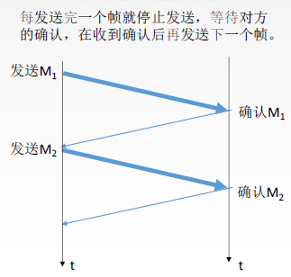
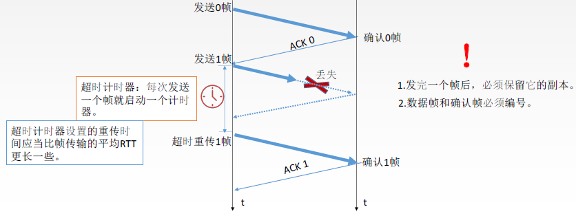
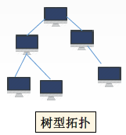
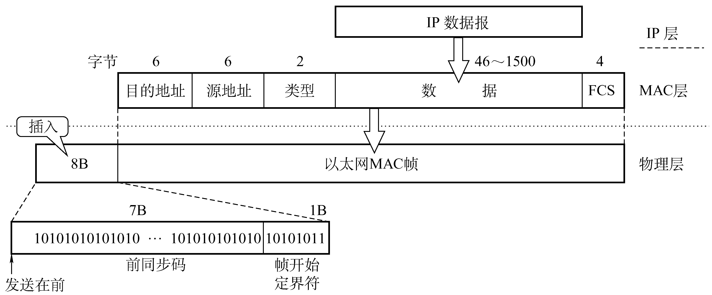
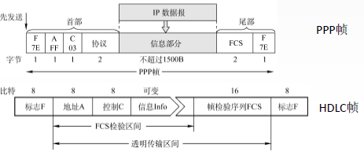
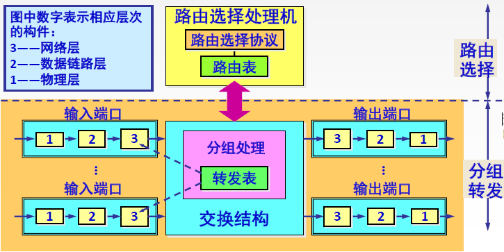
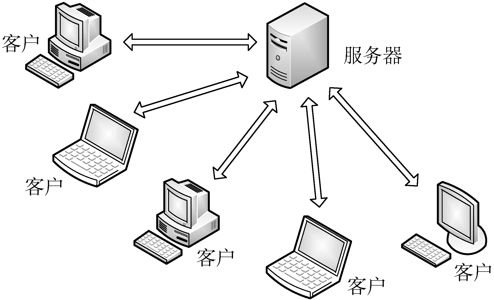

计算机网络 学习笔记
第一章 计网体系结构1-1 计算机网络概述1-1.1 概念与功能1、计算机网络的概念2、计网的功能3、计算机网络的发展1-1.2 组成与分类1、组成部分2、工作方式3、功能组成4、分类1-1.3 标准化工作以及相关组织1、标准化工作2、标准化工作的相关组织1-1.4 性能指标1、速率2、带宽3、吞吐量4、时延5、时延带宽积6、往返时延（RTT，Round-Trip Time）7、利用率1-2 体系结构&参考模型1-2.1 分层结构、协议、接口与服务1、分层结构1.实体2.协议3.接口（访问服务点，SAP）4.服务5.数据的构成1-2.2 OSI参考模型2、OSI模型
第一章 计网体系结构
1-1 计算机网络概述
1-1.1 概念与功能
1、计算机网络的概念
是一个将分散的、具有独立功能的计算机系统，通过通信设备与线路连接起来，由功能完善的软件实现资源共享和信息传递的系统。
计算机网络是互连的、自治的计算机集合。互连：通过通信链路互联互通；自治：无主从关系。
2、计网的功能
数据通信，资源共享（共享软硬件和数据）；
分布式处理、均衡负载（多台计算机各自承担同一工作的不同部分）；
提高可靠性（提供替代机等）。
3、计算机网络的发展
第一阶段：美军ARPAnet是目前因特网的前身；网络把许多计算机连在一起，互联网把网络连在一起。
第二阶段：三级结构（主干网-地区网-校园/企业网）
第三阶段：多层次ISP结构，分为主干、地区、本地ISP等。
ISP：因特网服务提供商。
IXP：因特网交换点，使两个同级的网络点可以直接通信。
1-1.2 组成与分类
1、组成部分
计算机网络由硬件、软件与协议组成。
2、工作方式
包括边缘部分与核心部分；边缘部分主要是端系统，如各类主机。
主机/端系统之间的通信实际上是进程间的通信（而非两台主机本身）。
端系统的通信方式有：C/S方式（Client/Server），客户向服务器发送请求通过服务器中转；B/S方式（Browser/Server）把客户端换成浏览器；还有P2P方式（peer-to-peer），即对等连接方式，每个端系统都又是客户端又是服务器。前两种依赖服务器，所以下载人数越多越慢；后者则是下载人数越多越快。
3、功能组成
根据OSI的7层模型来分，共有3个部分。
通信子网：实现数据通信。
资源子网：实现资源共享、数据处理。
传输层：介于资源子网和通信子网之间的一层。
4、分类
一般可以按照分布范围、使用者、交换技术、拓扑结构、传输结构分。
电路交换如打电话，通信线路是被占用的，一条线路只可以在同一时刻被两个人占用。报文交换、分组交换是一段一段的占用链路，但报文交换是完整的报文，分组交换是将完整报文分组进行交换。
星型：6个节点有5条链路。
广域网一般用网状型，局域网一般用总线型。
广播式网络：信息是公开的，所有用户都可以接收到。
1-1.3 标准化工作以及相关组织
1、标准化工作
分为法定标准（权威机构制定的正式标准，如OSI）和事实标准（如某些标准由民间制定但受到大家的默许，如TCP/IP）。另外，标准可以自行指定。
只要是因特网标准都是RFC（Request for Comments，请求评论）形式，但RFC不一定是因特网标准，需经过4个阶段：
因特网草案（此阶段还不是RFC文档）；建议标准（成为RFC文档）；建议标准被置于互联网上被人们审议，通过后成为草案标准（这一步于2011年已经被剔除）；最后通 过一些机构的审核成为正式的因特网标准l。
2、标准化工作的相关组织
国际标准化组织ISO：OSI模型与HDLC协议；
国际电信联盟ITU：制定通信规则；
电气与电子工程师协会IEEE：学术机构、IEEE802系列标准、5G等；
Internet工程任务组IETF：负责因特网相关标准的制定，RFC xxxx。
1-1.4 性能指标
1、速率
即数据率、数据传输率、比特率（1 bit，而非1 Byte）。指连接在计算机网络上的主机在数字信道上传送数据位数的速率。单位都和bit有关，如Mb/s等。
形容速率的单位的指数以10为底（基础单位是比特bit），存储容量的单位以2为底（基础单位是字节Byte）。
2、带宽
带宽用来表示网络的通信线路传送数据的能力，通常是指单位时间内从网络中 的某一点到另一点所能通过的“最高数据率”。也就是理论上（如硬件上）的最大网络传输速率。比如“100 Mbps的交换机”就是指其带宽。
3、吞吐量
表示在单位时间内通过某个网络（或信道、接口）的数据量，单位如Mb/s。也就是实际的速率（如只有20 MB的数据需要传输，带宽为1 Gbps，则吞吐率也只能按数据量来算），小于等于带宽。
4、时延
指数据（报文/分组/比特流）从网络（或链路）的一端传送到另一端所需的时间，也叫延迟或迟延。单位是s。（速记：发传出牌，发、传、处、排）
包括四大类，总时延包括此四类。
发送时延（传输时延）：数据的发送不是瞬间完成，需要时间。公式如上，等于数据长度/信道带宽。
传播时延：信号在连接两台主机的线路上(信道)上耗时。一个单位的数据（如1 bit）经过一个传播时延即从发送者到接受者。注意，传播时延是用线路之间的物理距离除以电磁波的传输速度得到的。
排队时延：如数据被暂时缓存在路由器中的时刻。
处理时延：采用各种校验方式校验是否有错误的时间。
注意，以上是电路交换时延的普通算法；还有分组交换时延=发送时延+传播时延（k组，k组的时延=n段乘以每段需要的时间+（k-1）组乘以一段所需时间）。
这里给出一道例题：传送报文 x 比特，源点到终点共k段链路，每段传播时延为 d 秒，数据传输速率为 b 比特每秒。使用电路交换时，电路建立时间为 k 比特每秒，在分组交换时分组长度为 p 比特。排队时间忽略不计。要求分别计算电路交换、分组交换的时延。
思路：电路交换时延 = 发送+传播+处理+排队时延 = x/b + k*d + s + 0；
记n为组数，则分组交换时延 = 发送+传播+排队时延 = （k-1+n)*p/b + k*d + 0；
分组传播时延的计算：第一组到终点需要时间为np/b，此时还有k-1组没到终点。
注意，在未说明的情况下组数n乘以分组长度p就等于报文长度x。所以若要电路交换时延小于分组交换时延，则
x/b + k*d + s < (k-1+n)*p/b + k*d ==> s < (k-1)*p/b.
5、时延带宽积
时延带宽积等于带宽与传播时延的积。 时延带宽积又称为以比特为单位的链路长度，即“某段链路在某个时刻有多少比特”。
6、往返时延（RTT，Round-Trip Time）
从发送方发送数据开始，到发送方收到接收方的确认为止（接收方收到数据后立即发送确认），总共经历的时延。
注意，只根据发送方的数据来计算RTT。RTT越大，在收到确认之前可以发送的数据越多（这是客观事实，但这并不意味着RTT越大越好）。
7、利用率
分为信道利用率和网络利用率。
信道利用率：发送方在一个发送周期内，有效地发送数据所需要的时间占整个发送周期的比率（
其中信道利用率U等于：
信道吞吐率：信道利用率 * 发送方的发送速率。
网络利用率：信道利用率加权的平均值。
1-2 体系结构&参考模型
1-2.1 分层结构、协议、接口与服务
分层原则：
各层之间相互独立，每层实现较为单一的功能，且分界自然清晰，尽量减少层次间的相互交流。
保持下层对上层的透明性，上层通过接口调用下层。
1、分层结构
网络体系结构，全称计算机网络体系结构，是从功能上描述计算机网络结构，含义是指计算机网络的各层、各层的功能及其协议的集合。它是一种分层结构，每层遵循某些网络协议来完成该层的功能。体系结构是抽象的，能够运行的一些软件或硬件是“实现”。对网络模型进行分层，没有定义功能执行的方法。
1.实体
第n层中的活动元素称为n层实体；同一层的实体叫做对等实体。只有对等的实体之间才有协议。
2.协议
为进行网络中的对等实体间的数据交换而建立的规则、标准或约定，是水平的。协议含有以下三个要素：
语法：规定传输数据的格式；
语义：规定所要完成的功能；
同步：规定各种操作的顺序。
3.接口（访问服务点，SAP）
上层使用下层所提供的服务的入口，是自下而上垂直的。接口仅在相邻层间有，且下层的技术细节对上层完全屏蔽。
上下层的接口是通过服务访问点（SAP）实现的，也就是上层通过访问SAP来调用下层。
4.服务
下层为相邻上层提供的功能调用。上层不直接越级调用更下层，而是上层调用下层，下层再调用更下层。服务有以下几种分类：
可靠/不可靠服务（具备纠错检错、应答机制与否，不可靠服务被称为“尽最大努力交付”）；
面向连接服务/无连接服务（双方先建立连接/不需先建立连接而直接发送）；
有/无应答服务（收到数据后给不给出“收到”的应答，应答通常是数据正确不应答而数据有问题才应答）；注意，文件传输服务是有应答的。
5.数据的构成
SDU（服务数据单元）：为完成用户的需要而传输的信息。
PCI（协议控制信息）：控制协议操作的 信息。每一层可能有不同的协议。
PDU（协议数据单元）：对等层次之间传送的数据单位。
每层的PDU都有一个通俗的名称：物理层——比特，数据链路层——帧，网络层——分组，传输层——报文段，等等。
物理层：比特流（Bit Stream），二进制数据流。
数据链路层：帧(frame)。将上层传入的数据添加一个头部和尾部，组成了帧，帧根据MAC地址寻址。
网络层：数据包(packet)，或称IP数据报、IP包。包中带有足够寻址信息(IP地址)，可独立地从源主机传输到目的主机
传输层：数据段(segment)、数据报(datagram)，或统称报文段。传输层TCP的分组叫做数据段（面向连接），UDP的叫做数据报（无连接）。
应用层：报文(message)。
1-2.2 OSI参考模型
2、OSI模型
OSI模型在理论上是十分成功的，但在市场上遭遇了失败。

传输层是资源子网和通信子网的接口层。
中间系统可能不需要经过所有层，如路由器可能只有通信子网中的3层。资源子网之间可以看作是端到端的通信，而通信子网之间则是点到点的。
总的来说，通信其实是打包（数据封装）与拆包的过程。如图所示：
真正需要传输的数据可能只有应用层获得的DATA。注意，数据链路层在首尾都要加（Head、Tail），其他只加头部（Head）；物理层不用特殊处理。
1、物理层
主要任务是在物理媒体上实现比特流的透明传输，物理层传输单位是bit。特点是透明传输：指不管所传数据是什么样的比特组合,都应当能够在链路上传送。主要协议：Rj45、802.3。
功能一：定义接口特性
功能二：定义传输模式（单工，发送端和接收端已经确认好；半双工，没有固定发送、接收者，但同一时刻只能一个用户发送信息；双工，两边可以同时发送信息，如现在的移动通话）
功能三：定义传输速率
功能四：比特同步（利用时钟保持发送和接收的数据同步）
功能五：比特编码
2、数据链路层
主要任务是把网络层传下来的数据报组装成帧，提供点到点的通信。数据链路层/链路层的传输单位是帧。主要协议：SDLC、HDLC、PPP、STP。
功能一：成帧（定义帧的开始和结束）
功能二：差错控制（包括帧错与位错，一般是物理连接在传输比特流的时候因噪声而出错）
功能三：流量控制（不是拥塞控制）
功能四：访问/接入控制（控制对共享信道的访问，如广播室控制哪一台电脑发出声音）
3、网络层
传输单位是数据报。主要任务是把分组从源端传到目的端，为分组交换网上的不同主机提供通信服务，以及选择一条合适的路径。网络层传输单位是数据报（过长的时候可以分组传输）。主要协议：IP、IPX、ICMP、IGMP、ARP、RARP、OSPF。
功能一：路由选择（选择经过的网络路径）；
功能二：流量控制（协调发送端和接收端的速率）；
功能三：差错控制（根据一定规则纠错检错）；
功能四：拥塞控制（若所有结点都因缓存已满等各种原因来不及接受分组而要丢弃大量分组，网络就处于拥塞状态；需要采取一定措施来缓解拥塞）。
4、传输层
负责主机中两个进程的通信，即端到端的通信（资源子网与传输层都是端到端）。传输单位是报文段或用户数据报。主要协议有TCP、UDP。
功能一：可靠传输（发送方在发出一段报文后，必须收到接收方的确认才可以发送下一段报文，是基于确认机制的）、不可靠传输（没有确认机制，直接发送）。
功能二：差错控制（检错纠错）；
功能三：流量控制（接收方的接收速率有限，希望发送方可以降低发送速率，TCP有而UDP无）。
功能四：复用分用，分组排序（复用：发送方的多个进程可以同时使用传输层来传输数据；分用：不同进程有不同的端口号，接收方的运输层可根据端口号把数据分别交付给对应的进程）。（记忆：可差流用）
5、会话层
向表示层实体/用户进程提供建立连接，并在连接上有序地传输数据。会话层允许不同主机上的各个进程进行会话。注意，校验点就在这一层。
进行会话就是建立同步（SYN），比如打开一个网页就和这个网页开始了会话（建立了同步），每个会话间是相互独立的。
功能一：建立、管理、终止会话；
功能二：使用校验点可使会话在通信失效时从校验点/同步点继续恢复通信，实现数据同步，如下载到一半后暂停以后还可以继续下载。主要协议有ADSP、ASP。
6、表示层
用于处理在两个通信系统中交换信息的表示方式（语法和语义）。功能有：数据格式转换、数据加密解密、数据压缩与恢复；主要协议有JPEG、ASCII等。
7、应用层
所有能和用户交互并产生网络流量的程序。本地程序不属于应用层。典型的有FTP（文件传输）、电子邮件（SMTP）、万维网（HTTP）等。
8、总结
| 物理 | 链路 | 网络 | 传输 | 会话 | 表示 | 应用 | |
|---|---|---|---|---|---|---|---|
| 数据单位 | 比特（流） | 帧 | 分组 | 报文 | |||
| 物理设备 | 集线器 | 交换机 | 路由器 | ||||
| 差错控制 | O | O | O | ||||
| 流量控制 | O（点） | O（点） | O（端） | ||||
| 定义接口和传输模式 | O | ||||||
| 访问/接入控制 | O | ||||||
| 拥塞控制 | O | ||||||
| 路由选择 | O | ||||||
| 面向有/无连接的服务 | O | ||||||
| 可靠传输（收到确认） | O（TCP） | ||||||
| 分组排序 | O | ||||||
| 端到端的应答 | O | ||||||
| 进程间的数据传送 | O | ||||||
| 校验/同步点 | O | ||||||
| 会话管理 | O | ||||||
| 数据格式转换压缩 | O |
1-2.3 TCP/IP参考模型
1、两种模型的对比
OSI模型是先有理论，TCP/IP模型是先有实践才有理论。
1、相同点
都分层；
基于独立的协议栈的概念；
可以实现异构网络互联。
2、不同点
OSI定义三点：服务、协议、接口；
OSI先出现，参考模型先于协议发明，不偏向特定协议；
TCP/IP设计之初就考虑到异构网互联问题，将IP作为重要层次。
两者在网络层与传输层的架构与功能不同。
| ISO/OSI参考模型 | TCP/IP模型 | |
|---|---|---|
| 网络层 | 无连接+面向连接 | 无连接 |
| 传输层 | 面向连接 | 无连接+面向连接 |
面向连接分为三个阶段，第一是建立连接，在此阶段，发出一个建立连接的请求。只有在连接成功建立之后，才能开始数据传输，这是第二阶段。接着，当数据传输完毕，必须释放连接。而面向无连接没有这么多阶段，它直接进行数据传输。无连接传输是不可靠的。
2 -5层参考模型
这是一种综合了OSI和TCP/IP的优点的模型。
Chapter 2 物理层
2-1 通信基础
2-1.1 物理层基本概念
1、物理层接口特性
物理层解决的是：如何在连接各种计算机的传输媒体上传输数据比特流，不是指具体的传输媒体。
物理层主要任务：确定与传输媒体接口有关的一些特性定义标准。特性有以下几个：
机械特性：定义物理连接的特性，规定物理连接时所采用的规格、接口形状、引线数目、引脚数量和排列情况。
电气特性：规定传输二进制位时，线路上二进制信号的电压范围、阻抗匹配、传输速率和距离限制等。描述电气特性会出现具体的数字。
功能特性：指明某条线上出现的某一具体电平表示何种意义，接口部件的信号线的用途。如：描述一个物理层接口引脚处于高电平时的含义。注意与电气特性区分。
规程特性（过程特性）：定义各条物理线路的工作规程和时序关系。
2-1.2 数据通信
1、典型模型
这里展示了物理层工作的典型模型。
物理层将上面的层中的数据转换成数字信号，经过调制解调器变为模拟信号，经过广域网与后续过程。注意发送器和接收器都是调制解调器，两个主机分别是信源、信宿。
2、相关术语
通信的目的：传送各种消息。
数据（data）：传送信息的实体，通常是有意义的符号序列。数据通信指在不同计算机之间传输表示信息的二进制数0、1序列的过程。
信号：数据的电气/电磁的表现，是数据在传输过程中的存在形式。
数字信号/离散信号：代表消息的参数的取值是离散的。 模拟信号/连续信号：代表消息的参数的取值是连续的。
信道：信号的传输媒介。一般用来表示向某一个方向传送信息的介质，因此一条通信线路往往包含一条发送信道和一条接收信道。
3、通信方式
共有三种通信方式：
单工：只有一个方向的通信，没有反方向的交互。仅需一条信道，如广播。
半双工/双向交替通信：双方都可以发送，但不能同时发送，需两条信道，如双向对讲机。
全双工/双向同时通信：通信双方可同时发送/接收信息，也需要两条信道。
4、传输
按串行并行分：
串行传输：将表示一个字符的8位二进制数按由低位到高位的顺序依次发送。特点是速度慢，费用低，适合远距离。只需要一条信道。
并行传输：将表示一个字符的8位二进制数同时通过8条信道发送。特点是速度快，费用高，适合近距离，需要多条信道。一般用于计算机内部数据传输。
按同步异步分：
同步传输：在同步传输的模式下，数据的传送是以一个数据区块为单位，因此同步传输又称为区块传输。在传送数据时，需先送出1个或多个同步字符，接收方就会开始接收，这样发送方再送出整批的数据。
特点：双方时钟始终相同，发送的数据连续。只有同步字符。
异步传输：异步传输将比特分成小组进行传送，小组可以是8位的1个字符或更长。发送方可以在任何时刻发送这些比特组，而接收方不知道它们会在什么时候到达。传送数据时，加一个字符起始位和一个字符终止位。
特点：双方不用时钟相同，发送的数据分为小组。有终止位和起始位。
并行/串行是一组方式，同步/异步是另一组方式。
5、码元
码元是指用一个固定时长的信号波形（数字脉冲），代表不同离散数值的基本波形，是数字通信中数字信号的计量单位。这个固定时长内的信号称为k进制码元，而该时长称为码元宽度。当码元的离散状态有M个时（M大于1），此时码元为M进制码元。下图中，红线部分就是一个码元，红线宽度称为码元长度或码元宽度。
1码元可以携带多个比特的信息量。例如，在使用二进制编码时，只有两种不同的码元，一种代表0状态，另一种代表1状态。
举例：4进制码元携带的比特信息为00、01、10、11，所以4进制码元携带的信息量是
6、速率与波特
速率也叫数据率，是指数据的传输速率，表示单位时间内传输的数据量。可以用码元传输速率和信息传输速率表示。
码元传输速率：别名码元速率、波形速率、调制速率、符号速率等，它表示单位时间内数字通信系统所传输的码元个数（也可称为脉冲个数或信号变化的次数），单位是波特（Baud，B）。k波特表示数字通信系统每秒传输k个码元。数字信号有多进制和二进制之分，但码元速率与进制数无关，只与码元长度/宽度T有关。
信息传输速率：别名信息速率、比特率等，表示单位时间内数字通信系统传输的二进制码元个数（即比特数），单位是比特/秒（b/s）。 关系：若一个码元携带n bit的信息量，则M Baud的码元传输速率所对应的信息传输速率为M*n bit/s。也可以这样算：k进制的传输速率为m Baud的码元信息传输速率为
7、带宽
带宽有两种语境，不同语境中语义不同。
模拟信号系统中：当输入的信号频率高或低到一定 程度，使得系统的输出功率成为输入功率的一半时(即-3dB)，最高频率和最低频率间的差值就代表了系统的通频带宽，其单位为赫兹(Hz)。
数字设备中：表示在单位时间内从网络中的某一点到另一点所能通过的“最高数据率”/单位时间内通过链路的数量，常用来表示网络的通信线路所能传输数据的能力。单位是比特每秒(bps)。
带宽描述的是一个信道的最优性能。
2-1.3 奈氏准则和香农定理
1、失真
失真指信号在传输过程中因各种原因产生了变化或扭曲。有以下两种情况：
影响失真因素：
码元传输速率（速率越快，失真越严重）；
信号传输距离（越远越容易失真）；
噪声干扰（越严重越容易失真）；
传输媒体质量。前三者是正相关，后者是负相关。
2、码间串扰
首先我们回顾一下：信道带宽是信道能通过的最高频率和最低频率之差。如果信号频率过低，那么很容易受到干扰而失真；过高则使得发送方来不及接收，也就是码间串扰现象。
码间串扰：接收端收到的信号波形失去了码元之间清晰界限的现象，是失真的一种现象。更多出现在发送的信号频率超出了信道能通过的最高频率之时。
3、奈氏准则
奈奎斯特定理：在理想低通（无噪声，带宽受限）条件下，为了避免码间串扰，极限码元传输速率为2W Baud，W是信道带宽（最高-最低频率），单位是Hz（注意！在这里，信道带宽的单位是Hz，因为这里是指模拟信号）。
极限传输速率：
一些结论：
在任何信道中，码元传输的速率是有上限的。若传输速率超过此上限，则码间串扰严重，使接收端对码元的完全正确识别成为不可能。
信道的频带越宽（即能通过的信号高频分量越多），就可以用更高的速率进行码元的有效传输。
奈氏准则限制了码元传输速率，但并没有限制信息传输速率。
由于码元的传输速率受奈氏准则的制约，所以要提高数据的传输速率，就必须设法使每个码元能携带更多个比特的信息量，这就需要采用多元制的调制方法。
4、香农定理
关于噪声：噪声存在于所有的电子设备和通信信道中。它随机产生，瞬时值有时会很大，因此噪声会使接收端对码元的判决产生错误。但是噪声的影响是相对的，若信号较强，那么噪声影响相对较小。
信噪比：信噪比等于信号的平均功率/噪声的平均功率，常记为S/N，并用分贝（dB）作为度量单位。信噪比可以直接写成S/N，但如果用分贝作为度量单位则有以下的数值对应关系（仅仅是数值对应，物理量不对应）：
香农定理：在带宽受限且有噪声的信道中，为了不产生误差，信息的数据传输速率有上限值。这个上限值的公式为：
一些结论：
1.信道的带宽或信道中的信噪比越大，则信息的极限传输速率就越高。 2.对一定的传输带宽和一定的信噪比，信息传输速率的上限可以确定。 3.只要信息的传输速率低于信道的极限传输速率，就一定能找到某种方法来实现无差错的传输。 4.香农定理得出的为极限信息传输速率，实际信道能达到的传输速率会更低。 5.从香农定理可以看出，若信道带宽W或信噪比S/N没有上限（不可能在现实中实现），那么信道的极限信息传输速率也就没有上限。
5、两个定理的联系与区别
在带宽受限的情况下，香农定理是有噪声无码间串扰的，奈氏准则是有码间串扰但无噪声的。我们可以将奈氏准则比作“内忧”，将香农定理比作“外患”。
| 名称 | 奈氏准则（内忧） | 香农定理（外患） |
|---|---|---|
| 场景 | 带宽受限但无噪声 | 带宽受限有噪声 |
| 干扰 | 内部的码间串扰 | 外部的噪声 |
| 公式 | ||
| 解决 | 要提高带宽/提高码元进制 | 提高带宽/信噪比 |
阅读题目信息来选择公式。在题目模糊的情况下，如果题目没给出信噪比，选择奈氏准则；如果都给了，都计算选最小值。
2-1.4 数据的编码与调制
1、基带信号与宽带信号
（复习）信道：信号的传输媒介。一般用来表示向某一个方向传送信息的介质，因此一条通信线路往往包含一条发送信道和一条接收信道。
我们可以将信号分为数字和模拟信号（离散和连续），也可以分为基带信号和宽带信号。
基带信号：将数字信号1和0直接用两种不同的电压表示，再送到数字信道上去传输（基带传输）。
解释：来自信源的信号（如计算机输出的代表各种文字或图像文件的数据信号）都属于基带信号。基带信号就是发出的直接表达了要传输的信息的信号，比如我们说话的声波就是基带信号。
宽带信号：将基带信号进行调制后形成的频分复用模拟信号，再传送到模拟信道上去传输（宽带传输）。
解释：把基带信号经过载波调制后，把信号的频率范围搬移到较高的频段以便在信道中传输（即仅在一段频率范围内能够通过信道）。
举例：A与B通话，A的声音是基带信号（人声是低频） ----》调制为可以传输的高频宽带信号并发送给B ----》解调为基带信号，B听到了A的声音。
在传输距离较近时，计算机网络采用基带传输方式（近距离衰减小，从而信号内容不易发生变化）； 在传输距离较远时，计算机网络采用宽带传输方式（远距离衰减大，即使信号变化大也能最后过滤出来基带信号）。
2、编码和调制
简单来说：不论是何种数据，数据转化为数字信号是编码，转化为模拟信号是调制。数据有两种，经过器件也不同，但都遵循这一规则。
其中调制器都是调制；如果有放大器就是模拟数据。
1、数字数据编码为数字信号
有如下几种方式（1,4,5更重要）：
非归零编码【NRZ】：编码容易实现，但没有检错功能，且无法判断一个码元的开始和结束，以至于收发双方难以保持同步。
归零编码【RZ】：信号电平在一个码元之内都要恢复到零的编码方式。低电平时间多，效率较低。在一个码元内就要发生电平跳变，与两种曼彻斯特编码相同。
反向不归零编码【NRZI】：信号电平如果发生翻转则表示0，不变则表示1。缺点和非归零编码差不多（全1数据不便识别）。和差分曼彻斯特编码的规则相同：同1异0。
曼彻斯特编码：将一个码元分成两个相等的间隔， 一个码元中前低后高为1，前高后低为0。也可以采用相反的规定。该编码的特点是，在每一个码元的中间出现电平跳变，位中间的跳变既作时钟信号（可用于同步），又作数据信号，但它所占的频带宽度是原始的基带宽度的两倍。注意：每一个码元都被调成两个电平，所以数据传输速率只有调制速率的1/2。它就是以太网、10BaseT网卡等使用的编码方式。
差分曼彻斯特编码：结合了反向不归零编码和曼彻斯特编码的特点。常用于局域网传输，其规则是：若码元为1，则前半个码元的电平与上一个码元的后半个码元的电平相同，若为0，则相反。该编码的特点是，在每个码元的中间，都有一次电平的跳转，可以实现自同步，且抗干扰性强于曼彻斯特编码。
4B/5B编码：比特流中插入额外的比特以打破一连串的0或1，即用5个比特来编码4个比特的数据，再传给接收方，因此称为4B/5B编码。编码效率为80%。
2、数字数据调制为模拟信号
数字数据调制技术在靠近信源的发送端将数字信号转换为模拟信号，而在靠近信宿的接收端将模拟信号还原为数字信号，分别对应于调制解调器的调制和解调或编码过程。
有3种基本的调制方法：

调幅：调整振幅，如将0调为无振幅。2ASK。
调频：调整频率。2FSK。
调相：调整相位，如用正余弦波分别代表0和1。2PSK。
还有调频+调相结合：QAM。
3、模拟数据编码为数字信号
模拟信号都是正弦波叠加而成的，而计算机内部处理的是二进制数据，处理的都是数字音频（0、1串），所以需要将模拟音频通过采样、量化转换成有限个数字表示的离散序列（即实现音频数字化）。
最典型的例子就是对音频信号进行编码的脉码调制（PCM），在计算机应用中，能够达到最高保真水平的就是PCM编码，如wav等格式中均有使用。它主要包括以下的3步：
抽样：对模拟信号周期性扫描，把时间上连续的信号变成时间上离散的信号。为了使所得的离散信号能无失真地代表被抽样的模拟数据，要使用采样定理进行采样：采样频率≥ 2*信号最高频率。举例：如果模拟信号由a、b波叠加，a、b频率分别为2 Hz、1 Hz，那么采样频率需要大于等于2 * 2 Hz即大于等于4 Hz。
量化：把抽样取得的电平幅值按照一定的分级标度转化为对应的数字值，并取整数，这就把连续的电平幅值转换为离散的数字量。
编码：把量化的结果转换为与之对应的二进制编码。
4、模拟数据调制为模拟信号
为了实现传输的有效性，可能需要较高的频率（高频抗干扰）。这种调制方式还可以使用频分复用技术，充分利用带宽资源。在电话机和本地交换机所传输的信号是采用模拟信号传输模拟数据的方式；模拟的声音数据是加载到模拟的载波信号中传输的。也就是将频率较高的模拟数据调制为频率更高的模拟信号（通过载波信号）。
2-1.5 数据交换方式
数据报交换、报文交换是无连接，电路交换和虚电路方式是有连接。
1、电路交换
电路交换的原理：在数据传输期间，源结点与目的结点之间有一条由中间结点构成的专用物理连接线路，在数据传输结束之前，这条线路一直保持。
三个阶段：
首先建立连接后发送呼叫请求，交换设备（路由）A通过算法得知下一个交换设备，最后转发至目的节点。
特点：独占资源，采用全双工通信，实时性好，用户始终占用端到端的固定传输带宽。适用于远程批处理信息传输或系统间实时性要求高的大量数据传输的情况。不具备差错控制功能。
注意：电路交换需要预分配带宽，而报文交换、两种分组交换（数据报、虚电路）都是不需要预分配带宽的。原因是：报文交换、分组交换的带宽是不固定的，这样当信道空闲的时候就可以降低带宽提高信道的利用率。
2、报文交换
报文：报文(message)是网络中交换与传输的数据单元，即站点一次性要发送的数据块。报文包含了将要发送的完整的数据信息，其长短很不一致，长度不限且可变。注意不能用于实时通信。
报文交换的原理：没有独占资源，无需在两个站点之间建立一条专用通路，其数据传输的单位是报文，传送过程采用存储转发方式。交换设备会自行选择路径。
3、分组交换
分组：大多数计算机网络都不能连续地传送任意长的数据，所以实际上网络系统把数据分割成小块，加上控制信息然后逐块发送，这种小块就称作分组（packet）。对报文交换的主要改进是减少了传输时延。
分组交换的原理：分组交换与报文交换的工作方式基本相同，都采用存储转发方式，形式上的主要差别在于，分组交换网中要限制所传输的数据单位的长度，一般选128 B。发送节点首先对从终端设备送来的数据报文进行接收、存储，而后将报文划分成一定长度的分组，并以分组为单位进行传输和交换。接收结点将收到的分组组装成信息或报文。
分组交换也有两种方式来实现。
1、数据报方式
步骤
源主机（A）将报文分成多个分组，依次发送到直接相连的结点（A）。
结点A收到分组后，对每个分组差错检测和路由选择，不同分组的下一跳结点可能不同。
结点C收到分组P1后，对分组P1进行差错检测，若正确则向A发送确认信息，A收到C确认后则丢弃分组P1副本，以此类推。
主机B收到了所有分组。
特点
数据报方式为网络层提供无连接服务。发送方可随时发送分组，网络中的结点可随时接收分组。
同一报文的不同分组达到目的结点时可能发生乱序、重复与丢失。
每个分组在传输过程中都必须携带源地址和目的地址，以及分组号，即控制信息。
分组在交换结点存储转发时，需要排队等候处理，这会带来一定的时延。当通过交换结点的通信量较大或网络发生拥塞时，这种时延会大大增加，交换结点还可根据情况丢弃部分分组。
网络具有冗余路径，当某一交换结点或一段链路出现故障时，可相应地更新转发表，寻找另一条路径转发分组，对故障的适应能力强，适用于突发性通信，不适于长报文、会话式通信等出错率高的情况。
2、虚电路方式
虚电路：一条源主机到目的主机类似于电路的路径（逻辑连接，电路交换是物理的），路径上所有结点都要维持这条虚电路的建立，都维持一张虚电路表，每一项记录了一个打开的虚电路的信息。虚电路将数据报方式和电路交换方式结合，以发挥两者优点。
虚电路交换方式提供了两种机制：永久性虚电路（PVC）和交换性虚电路（SVC），前者是一些已经连接好的而且不是临时性的，后者是会话完就撤销的临时性连接。所以虚电路交换方式不一定就是临时性的。
三个阶段和电路交换相同：建立连接（源发送呼叫请求，收到应答后才算建立连接）、数据传输（控制信息中不需携带目的地址，因为有已经确定好的专用路径，路由选择体现在这条逻辑通路的建立；但要携带虚电路号来方便分组的还原）、释放连接。
特点
虚电路方式为网络层提供连接服务。源节点与目的结点之间建立一条逻辑连接，而非实际物理连接。
一次通信的所有分组都通过虚电路顺序传送，分组不需携带源地址、目的地址等信息，包含虚电路号（VCID，用以进行分组转发），相对数据报方式开销小，同一报文的不同分组到达目的结点时不会乱序、重复或丢失。
虚电路仍然是基于交换的，不需要为每条虚电路预留带宽。
分组通过虚电路上的每个节点时，节点只进行差错检测，不需进行路由选择，路由选择在建立虚电路时进行。
每个节点可能与多个节点之间建立多条虚电路，每条虚电路支持特定的两个端系统之间的数据传输，可以对两个数据端点的流量进行控制，两个端系统之间也可以有多条虚电路为不同的进程服务。
致命弱点：当网络中的某个结点或某条链路出故障而彻底失效时，则所有经过该结点或该链路的虚电路将遭到破坏。这导致它不适用于出错率高的情况。

4、三种方式的比较
传送数据量大，且传送时间远大于呼叫时，选择电路交换。电路交换传输时延最小。
当端到端的通路有很多段的链路组成时，采用分组交换传送数据较为合适。
从信道利用率上看，报文交换和分组交换优于电路交换，其中分组交换比报文交换的时延小，尤其适合于计算机之间的突发式的数据通信。
2-2 物理层的传输
2-2.1 物理层的传输介质
传输介质也称传输媒体/传输媒介，它就是数据传输系统中在发送设备和接收设备之间的物理通路。
注意，传输媒体并不是物理层。传输媒体在物理层的下面，因为物理层是体系结构的第一层，因此有时称传输媒体为第0层。在传输媒体中传输的是信号，但传输媒体并不知道所传输的信号代表什么意思。但物理层规定了电气特性，因此能够识别所传送的比特流。
1、导向性传输介质
一般是真正的”线路“，如铜线和光纤。
（1）双绞线：由两根采用一定规则并排绞合的、相互绝缘的铜导线组成。绞合可以减少对相邻导线的电磁干扰（电磁场相互抵消）。为了进一步提高抗电磁干扰能力，可在双绞线的外面再加上金属丝编织的屏蔽层，成为屏蔽双绞线（STP），无屏蔽层的双绞线就称为非屏蔽双绞线（UTP）。
双绞线特点：价格低廉，最为常用。距离为几公里或几十公里。距离太远时，对于模拟传输，要用放大器放大衰减的信号；对于数字传输，要用中继器将失真的信号修复。
（2）同轴电缆：按特性阻抗数值的不同，通常将同轴电缆分为两类：50Ω同轴电缆和75Ω同轴电缆。50Ω同轴电缆主要用于传送基带数字信号，又称为基带同轴电缆，在局域网中广泛应用；75Ω同轴电缆主要用于传送宽带信号，又称为宽带同轴电缆，主要用于有线电视系统。(复习：宽带信号由基带信号进行模拟调制得到)。带宽高不是得益于铜芯粗、阻抗标准，而是得益于屏蔽性高。注意，只有一根电缆不代表只有一条信道。
同轴电缆特点：价格比双绞线略贵，抗干扰性很好，传输距离更远。
（3）光纤：利用光脉冲进行通信。有光脉冲表示1，无光脉冲表示0。外层是低折射率的包层，内层是高折射率的纤芯，光在纤芯中“反弹”。多模光纤是同时发出不同入射角的光，单模光纤在横向模式中直线传播。
光纤特点：超低损耗，传输超远距离，保密性好，抗干扰性强。
2、非导向性传输介质
一般是自由空间，如空气等。
（1）无线电波：较强穿透能力，可传较远距离，广泛用于通信领域（如手机通信）。
（2）微波：通信频率高，频段范围宽，数据率高。首先使用卫星通信，然后地面有中继站进行地面微波接力通信。
卫星通信的优点：通信容量大，距离远、覆盖广，支持广播通信和多址通信；
卫星通信的缺点：实验较长，受太阳活动、气候变化影响，误码率较高且成本高。
（3）红外线和激光：把要传输的信号分别转换为各自的信号格式，即红外光信号和激光信号，再在空间中传播。
这三种方式中，无线电波的信号向所有方向传播，微波、红外线、激光都是固定方向传播的。
2-2.2 物理层的传输设备
1、中继器
在信号传输过程中，由于存在损耗，信号功率会逐渐衰减，衰减到一定程度时将造成信号失真，因此会导致接收错误。
中继器（RP Repeater）的功能：对信号进行再生和还原，对衰减的信号进行放大，保持与原数据相同，以增加信号传输的距离，延长网络的长度。用来再生数字信号（模拟信号使用放大器）。
中继器的两端：两端的网络部分是网段，而不是子网，适用于完全相同（同层的两端的网段协议需要相同，如中继器在物理层那么物理层协议要相同而不管数据链路层，上层也同理）的两类网络的互连，且两个网段速率要相同。两端可连接相同或不同的媒体。
中继器只将某一电缆段上的数据发送到另一电缆上，仅作用于信号的电气部分，并不管数据中是否有错误数据或不适于网段的数据。中继器不存储转发。
5-4-3规则：网络标准中都对信号的延迟范围作了具体的规定，因而中继器只能在规定的范围内进行（不能无限使用），否则会网络故障。5-4-3指：最多有5个网段，其中最多4台中继器，最多接入3台工作站。
2、集线器（多口中继器）
集线器和中继器都是转发器（Repeater）的一种。
集线器的功能： 对信号进行再生放大转发，对衰减的信号进行放大，接着转发到其他所有（除输入端口外）处于工作状态的端口上，以增加信号传输的距离，延长网络的长度。不具备信号的定向传送能力，是一个共享式设备（广播式的设备，用户都可以接收到信号）。
拥挤线器连接的工作站同属一个冲突域、同属一个广播域。
例如：多口集线器带宽为100 Mbps，那么10台主机每人只有10 Mbps。
拓扑结构：一般是星型拓扑。
Chapter 3 数据链路层
3-1 数据链路层的功能
3-1.1 概述
1、研究思想
数据链路层负责通过一条链路从一个结点向另一个物理链路直接相连的相邻结点传送数据报，类似一个搬运者。
虽然实际情况下，数据从A到B需要经过的是封装、解封等流程的不断重复，但我们可以直接将此过程简化为水平传输。
2、基本概念
结点：主机、路由器
链路：两结点间的物理通道，链路的传输介质主要有双绞线、光纤和微波。分为有线链路、无线链路。
数据链路：网络中两个结点之间的逻辑通道，把实现控制数据传输协议的硬件和软件加到链路上就构成数据链路。
帧：链路层的协议数据单元，封装网络层数据报。
3、功能概述
数据链路层在物理层提供服务的基础上向网络层提供服务。
最基本的服务是将源自网络层来的数据可靠地传输到相邻节点的目标机网络层。
主要作用是：加强物理层传输原始比特流的功能，将物理层提供的可能出错的物理连接改造成为逻辑上无差错的数据链路，使之对网络层表现为一条无差错的链路。
功能一：为网络层提供服务。无确认无连接服务，有确认无连接服务，有确认面向连接服务。有连接一定有确认，有确认不一定有连接！
功能二：链路管理，即连接的建立、维持、释放（用于面向连接的服务）。
功能三：组帧，也就是封装成帧。
功能四：流量控制，发出限制发送方发送速度减缓一些等的提示，实际上是对发送方的数据流量的控制。
功能五：差错控制（帧错/位错）。
3-1-2 组帧和透明传输
1、封装成帧
封装成帧：在一段数据的前后部分添加首部和尾部，这样就构成了一个帧。接收端在收到物理层输送的比特流后，就能根据首部和尾部的标记，从比特流中识别帧的开始和结束。
帧的首部和尾部包含许多的控制信息，其中一个重要作用是帧定界（确定帧的界限）。
帧同步：接收方应当能从接收到的二进制比特流中区分出帧的起始和终止。
组帧的四种方法：1、字符计数法；2、字符（节）填充法；3、零比特填充法；4、违规编码法。将在下一部分详细说明。
2、透明传输
透明传输是指：不管所传数据是什么样的比特组合，都应当能够在链路上传送。（链路层“看不见”传输的内容，也就是帧的数据部分）。我们要实现的就是透明传输。
当所传数据中的比特组合恰巧与某一个控制信息完全一样时，就必须采取适当的措施，使收方不会将这样的数据误认为是某种控制信息。这样才能保证数据链路层的传输是透明的。所以我们需要一些特殊的组帧方法。
1.字符计数法（字节计数法）
帧首部使用一个计数字段（第一个字节，八位）来标明帧内字符数。

如图，有些类似数组的标记方式，在首位标明这个帧共有多少字符。问题也出在此：如果第一帧的第一位错误，那后面所有帧都会受影响，故应用较少。
2.字符填充法
用Start of header（SOH）表示帧首部，End of transmission（EOT）表示帧尾部。但是，由于SOH、EOT都只是01串，所以有可能会有这两种情况：
这是正常情况：数据部分是由文本文件组成，都是ASCII码，不管从键盘上输入什么字符都可以放在帧里传过去，即透明传输。
这是异常情况：数据部分是非ASCII码的其他文件组成的，如图像等，这个时候就需要字符填充法。
那么什么是字符填充法？简单来说就是在EOT、SOH前加上转义字符ESC，告诉接收端什么是真正的EOT等。如果数据中出现了ESC，那么就在这个ESC前再加一个ESC。
3.零比特填充法（比特填充）
这种方法首部、尾部都是0111 1110。那么数据中出现了这个0111 1110应该怎么办呢？简而言之是 5“1”，1“0”法，让数据中没有6个及以上的连续的“1”出现。操作如下：
在发送端，扫描整个信息字段，只要连续5个1，就立即填入1个0。
在接收端收到一个帧时，先找到标志字段确定边界，再用硬件对比特流进行扫描。发现连续5个1时，就把后面的0删除。
这样就保证了透明传输，在传送的比特流中可以传送任意比特组合，而不会引起对帧边界的判断错误。
4.违规编码法
比如说，曼彻斯特编码中要么前高后低为1，前低后高为0或者反过来，没有高高和低低两种编码。那么，就可以使用高高和低低来定界帧的起始和终止。这是在物理层的编码中实现的。
综上，因为字节计数法中Count字段的脆弱性（其值若有差错将导致灾难性后果）及字符填充实现上的复杂性和不兼容性，目前较普遍使用的帧同步法是比特填充和违规编码法。
3-1.3 差错控制和检错编码
1、差错
1.产生原因
概括来说，传输中的差错都是由于噪声引起的。引起差错的原因一般有两种：
全局性：由于线路本身电气特性所产生的随机噪声(随机热噪声)，是信道固有的，随机存在的。解决办法：提高信噪比来减少或避免干扰。（对传感器下手）
局部性：外界特定的短暂原因所造成的冲击噪声，是产生差错的主要原因。解决办法：通常利用编码技术来解决（自动重传请求ARQ，直接让发送方重发，和前向纠错FEC，让接收端负责检错纠错）。
2.差错分类
差错可以分为位错和帧错两种。
位错：某个特定的比特位出错，导致1/0之间的变化。
帧错：帧为单位的丢失、重发、时序问题。
对不同链路，我们可以采取不同的传输机制，如上。
2、差错控制 - 检错编码
1.物理层、数据链路层的编码的区别
数据链路层的“编码”和物理层的“数据编码与调制”不同。
物理层编码针对的是单个比特，解决传输过程中比特的同步等问题，如曼彻斯特编码。
数据链路层的编码针对的是一组比特，它通过冗余码的技术实现一组二进制比特串在传输过程是否出现了差错。
“冗余码”的概念：
在数据发送之前，先按某种关系附加上一定的冗余位，构成一个符合某一规则（如符合奇偶性规则等）的码字后再发送。
当要发送的有效数据变化时，相应的冗余位也随之变化，使码字遵从不变的规则。
接收端根据收到码字是否仍符合原规则，判断是否出错。
2.奇偶校验码
对于n-1位信息元，我们添加一位校验元，使得这n位数据中：
奇校验码：“1”的个数为奇数个，或者每位异或得1；
偶校验码：“1”的个数为偶数个，或者每位异或得0。
但奇偶校验码有检错局限，只能检查出奇数个比特错误，检错能力为50%。
3.CRC校验码
过程说明：先准备要传输的数据A，再准备一个已经约定好的生成多项式B，用A除以B得到余数C（C就是冗余码，或称为FCS帧检验序列），发送端最终发送的数据是A+C；接收端用接收到的值A+C除以B，如果余数为0就判定无错，接收数据。
CRC是具有纠错能力的，但是在数据链路层中只用到了它的检错功能，检测到帧错直接丢弃，是为了方便协议的实现。
在计算机中：
先准备待传有效数据（称为一组，d位），双方商定一个生成多项式（r+1位，也就是阶为r，TIPS：多项式N位，阶为N-1）；
在有效数据后加上r位的‘0’，再去除以生成多项式，得到余数（r位FCS）；
每个组都加上FCS/冗余码（r位）构成帧再发送；
接收方收到这d+r位数据，除以生成多项式，余数为0则认为正确，否则丢弃。
注意，这里的“除法”不是普通数学中的除法，而是模二除法。模二除法本质是没有进位退位的除法，简单来说可以看成按位异或（同0异1，1101模二除以0010得1111）。
FCS的生成以及接收端CRC检验都是由硬件实现，处理很迅速，因此不会延误数据的传输。
经过这样的校验，我们可以认为凡是接收端在数据链路层接收的帧均无差错。
3、差错控制 - 纠错编码
上一部分的CRC、奇偶校验都是“检错编码”，也就是说，只能认识到有错误而不知道错误在何处甚至精确到某一位。海明码和前几种方法最大的不同就是，在海明码的工作流程中需要确定校验码和数据的位置。但海明码也只能发现双比特错、纠正单比特错。
1.码矩（海明距离）
在一个编码系统中，两个合法编码(码字)的对应比特取值不同的比特数称为这两个码字的海明距离(码距)，一个有效编码集中,任意两个合法编码(码字)的海明距离的最小值称为该编码集的海明距离(码距)。
举例来说：
在编码系统A中有：000,001,010,011四个编码，它们之间海明距离最小值为1，所以码矩为1。
编码系统B有001,010,100三个编码，码矩为2。
编码系统C有111,000两种，码矩为3。
在默认只有一个比特出错的情况下，码矩为1不可被纠错也不可被检错，码矩为2可检测出1位错但也不可被纠正，码矩为3可检错可纠正。公式：如果有d个比特出错，检错需要码矩为d+1，纠错需要2d+1。
2.确认检验码位数r
我们称数据/信息有m位，冗余码/校验码有r位。r位校验码有2^r^种取值；若认为只有一个比特出错，那么共有m+r种错，还有一种无错的情况，所以共m+r+1种。所以已知m的情况下，需要这样计算r：
例如，需发送D为1100，则m=4，r=3，所以D的海明码有7位，原数据、校验码分别是4位、3位。
3.确定校验码和数据的位置
校验码放在2^n^的位置，即1,2,4,...的位置。 可以用通配符的形式来理解校验码对应管辖的数据，比如有3位海明码，1**、*1*、**1分别是指第1/2/3位为1的2进制序号。
比如，序号7的二进制为111，按照通配符发现它满足1**、*1*、**1三种，所以第七位被三个海明码（序号为1,2,4）管理。假设这里采用偶校验，则
最后得到完整海明码：110 0001。
5.检错和纠错
我们先把几个校验码和对应的位数写出来，如图：
接下来，我们设几个未知数x，并通过奇/偶校验计算出它们的值，从左到右组合起来得到一个二进制数，它的10进制值就是错误的位数。
3-2 流量控制、可靠传输机制和三种协议
3-2.1 流量控制与可靠传输
简而言之，发送太快、接收太慢会造成传输出错。很多层都有流量控制的功能，但方法不一样。数据链路层的流量控制是点对点的，而传输层的流量控制是端到端的：
数据链路层流量控制手段：接收方收不下就不回复确认，能收下就发送确认帧给接收方。
传输层流量控制手段：接收端给发送端一个窗口公告。
1、停止-等待协议简介

这种协议效率较低，每发一帧就需要等待。 可以看成是接收窗口和发送窗口都只有一帧的滑动窗口协议。
2 滑动窗口协议简介
共分为两种：
后退N帧协议（GBN）：发送窗口大于1，接收窗口等于1；
选择重传协议（SR）：发送窗口、接收窗口都大于1。
本章中我们要解决的问题有：
可靠传输：保障发送端发送内容和接收端接收内容相同。
流量控制：控制发送速率，使接收方有足够的缓冲空间来接收每一帧。
我们通过滑动窗口协议来解决：流量控制（收不下就不给确认信号，想发也发不了）；可靠传输（发送方自动重传，ARQ机制）。
上述的这三个协议以前是作用于链路层，现在是网络层（网络质量提高）。
3-2.2 停止-等待协议
1、停止-等待协议的使用场景
为什么要使用停止-等待协议：除了比特出差错，底层信道还会出现丢包（数据包的丢失）问题；另外还要实现流量控制。
使用情况：虽然现在常用全双工通信方式，但仅考虑一方发送数据（发送方），一方接收数据（接收方）的情况。另外，因为是在讨论可靠传输的原理，所以并不考虑数据是在哪一个层次上传送的。
协议内容：“停止-等待”的含义是，每发送完一个分组就停止发送，等待对方确认，在收到确认后再发送下一个分组。
应用场景：无差错、有差错都可以应用。
2、无差错情况
无差错：注意，发送0/1帧是编号，但不是相同的帧。原因是，在无差错的情况下，每发送1个数据帧就停止并等待，因此用0/1来编号就足够。
3、有差错情况1-数据帧丢失或者帧出错

如图，第一个1号帧丢失了，导致发送方一直未接收到确认数据；当超时计时器确认超时后（这个时间应当长于平均RTT），就会重传1号帧。
出错的情况类似，发送方接收到的确认信号表明帧出错了就重新传输。
注意：没发完一个帧后都需要保留其副本（保证可以重发）。且数据帧和却认真都必须编号。
4、有差错情况2-ACK丢失
这种情况中，发送方没有收到确认帧，所以超时重传，这样接收方就收到了两次1号帧，就会丢弃第二次接收到的1号帧并重新传输确认帧。
5、有差错情况3-ACK迟到
情况如下：发送方发送了0号帧后接收方的确认0帧迟到了，发送方就重发0帧，接收方也丢弃第二次的0帧后再重传确认0帧；但发送方在发送1帧后收到了确认0帧，由于需要的是确认1帧而收到确认0帧，所以直接丢弃不作处理。
还有一种情况：确认0帧迟到但在发送1帧前就到了。那么并无本质影响，发送方还是会收到两次确认0帧。见上面的红线。
6、性能分析
停止-等待协议实现机制简单，但缺点在于信道利用率太低，大量时间浪费于等待回复。在第一章中我们知道，信道利用率U等于：
下面举一个例子：

3-2.3 后退N帧协议（GBN）
1、改进停止-等待协议
我们可以发送一个帧后再继续发送下一个帧，这就是流水线技术，如下图所示。
为了能够采取流水线技术，我们需要做如下的改进：
必须增加序号范围，0、1不再够使用；
发送方需要能够缓存多个分组而非仅仅一个。
2、滑动窗口
发送窗口：发送方维持一组连续的允许发送的帧的序号。
接收窗口：接收方维持一组连续的允许接收帧的序号。
需要注意的是，接收方并不需要每个帧都发回一个ACK，可以采取累计确认的方式，比如接收了1~3帧以后统一发送一个ACK3代表1~3帧都已正确接收。
但偶尔也会捎带确认，是指接收方偶而发送一些非确认的信息给发送方（相当于此时进行了其他事务），确认帧就放在这些数据被一同“捎带着”发送给发送方了。
发送方每收到一个ACK就向右滑动若干（大于等于1）个格。
滑动窗口不能过大。若采用n个比特对帧编号（所以范围为0~
3、发送方需要的响应
1.上层的调用
上层要发送数据时，发送方先检查发送窗口是否已满：
如果未满，则产生一个帧并将其发送；
如果窗口已满，发送方只需将数据返回给上层，暗示上层窗口已满，上层等一会再发送。（实际实现中，发送方可以缓存这些数据，窗口不满时再发送帧）。
2.收到了一个ACK
GBN协议中，对n号帧的确认采用累积确认的方式，标明接收方已经收到n号帧和它之前的全部帧。
3.超时事件
本协议的名字来源于出现丢失和时延过长帧时发送方的行为。
类似停等协议一样，超时计时器将再次用于恢复数据帧或确认帧的丢失。如果出现超时，发送方重传所有已发送但未被确认的帧。
这样，发送方的窗口就需要回退N帧，所以有了本协议的名字。
4、接收方需要的响应
有且只有一种情况需要直接接收：正确且按序收到n号帧，那么接收方为这个第n帧发送一个ACK，并将该帧中的数据部分交付给上层。
其余情况都丢弃帧，并为最近按序接收的帧重新发送ACK。接收方无需缓存任 何失序帧，只需要维护一个信息：expectedSeqNum（下一个按序接收的帧序 号）。
5、举例
假设发送窗口尺寸为4，发送的第一个2号帧丢失：
可以看到，在发送5帧后2帧超时，所以窗口后退N帧到2帧重发。
3-2.4 选择重传协议（SR）
1、对GBN的改进
GBN因连续发送数据帧而提高了信道利用率；但由于累计确认机制，在重传时必须把原来已经正确传送的数据帧全部批量重传，使得传送效率降低。
如果可以仅仅重新发送出错、丢失的帧，那么效率会提高很多，这就引出了选择重传协议SR。
解决办法：
设置对每个帧的单个确认；
加大接收窗口并使窗口有更多功能；
在接收方设置接收缓存来存放乱序到达的帧。
2、滑动窗口
SR的滑动窗口中，有以下几种帧：
窗口长度：发送窗口的长度最好和接收窗口相同，且
3、发送方需要的响应
1.上层的调用
从上层收到数据后，SR发送方检查下一个可用于该帧的序号。
如果序号位于发送窗口内，则发送数据帧；
否则就像GBN一样，要么将数据缓存，要么返回给上层之后再传输。
2.收到了一个ACK
如果收到某个ACK，就加入该帧序号在窗口内，将那个被确认的帧标记为已接收。
如果该帧序号是窗口的下界（最左边第一个窗口对应的序号），则窗口向前移动到具有最小序号的未确认帧处。如果不是下界则不移动。
如果窗口移动了，并且有序号在窗口内的未发送帧，则发送这些帧。
3.超时事件
每个帧都有自己的定时器，一个超时事件发生后只重传一个帧。
4、接收方要做的事
SR的接收方可以说是“来者不拒”。
接收方将确认一个正确接收的帧而不管其是否按序。失序的帧将被缓存，并返回给发送方一个对于该帧的确认帧，直到所有帧（即序号更小的帧）皆被收到为止，这时才可以将一批帧按序交付给上层，然后向前移动滑动窗口。
如果收到了一个小于窗口下界的帧，就返回一个ACK；若大于窗口上界则忽略。
5、举例
假设收发窗口尺寸都为4，发送的2号帧丢失，则：
3-3 数据链路层的介质访问控制（MAC）
3-3.1 概述
1、传输数据使用的两种链路
点对点链路：两相邻接点通过一个链路相连，没有其他介入者。应用：PPP协议，常用于广域网。
广播式链路：所有主句共享通信介质。应用：早期的总线以太网、无线局域网，常用于局域网。典型拓扑结构是总线型和星型（逻辑总线型）。
2、介质访问控制的方法
介质访问控制（MAC，Multiple Access Control ）有两类方法，静态的和动态的；动态方法又分为轮询访问和随机访问。
1.静态划分信道简介
这是通过信道划分实现介质访问控制的方法。
它包括四种：频分多路复用（FDM，Frequency Division Multiplexing），时分多路复用（TDM，Time），波分多路复用（WDM，Wave），码分多路复用（CDM，Code）。
2.动态分配信道简介
分为：通过轮询访问实现控制的令牌传输协议，以及通过随机访问实现控制的ALOHA、CSMA、CSMA/CD、CSMA/CA四种不同的协议。
3-3.2 静态划分-信道划分的介质访问控制
1、名词解释
信道划分介质访问控制是指，将适用介质的每个设备与来自同意信道上的其他设备的通信隔离考，将时域和频域资源合理分配给网络上的资源。
多路复用技术是指，将多个信号组合在一条物理信道上进行传输，使得多个终端共享信道资源从而提高信道利用率。实际作用就是，将广播信道转化为点对点信道。
2、频分多路复用（FDM，frequency division multiplexing）
用户在分配到一定的频带后，在通信过程中自始至终都占用着这个频带；频分复用的所有用户在同样的时间占用不同的带宽（频率带宽）资源。
优点：充分利用传输介质的带宽，效率较高；技术成熟，实现较为简单。类似于并行。
3、时分多路复用（TDM）和统计时分复用（STDM）
将时间划分为一段段等长的时分复用帧（TDM帧，这里的帧是物理层的比特流而非链路层的帧）；每个用户在每个TDM帧中占有固定序号的时隙，所有用户轮流占用信道。类似于并发。
我们看上面的图，如果A/B/C全都停止，D还是只会在每个TDM帧里的最后一部分传输。这是因为时分复用分配的是一段段固定的时隙，造成了效率的降低。
我们可以进行一些改进，将TDM改进为STDM（统计时分复用）。STDM通过一个集中器将数据缓存放入STDM帧中，每个STDM帧满了就发出。STDM不是固定分配时隙，而是按需动态分配。比如说，如果设定一个STDM帧容量为2，则
如果时分复用带宽为8000 b/s，那么4个人每人最高为2000 b/s；但如果采用统计时分复用，那么最高就可以达到8000 b/s。
4、波分多路复用（WDM）
波分多路复用的本质是光的频分多路复用（光频率不宜直接计算，用波长方便分解）。各种波长不同的光信号互不干扰，使用合波器进行复用，用分波器进行分波。
5、码分多路复用（CDM）
我们思考频分多路复用，可以发现，每个传输任务共享了时间（同时传输），但没有共享空间（使用不同的信道）。
接着思考时分多路复用：每个任务不同时发送，但是它们在同一个信道传输，所以是共享了空间但没共享时间。
码分多址（CDMA）是码分复用的一种方式。
每发送1比特是需要一些时间的，我们可以将这些时间分成微时隙，这样就将这个比特分为了多个码片/芯片（chip）。用向量来表示每个比特的芯片序列。
每个站点被指定发送为一个m位芯片序列；每当发送1时就发送芯片序列（芯片序列中的0写作-1），发送0就发送该站点的芯片序列的反码（-1变成1，1变成-1）。
多个站点同时发送数据的时候，要求各个站点的芯片序列相互政教，内积为0；
两个向量到了公共信道上只需要线性相加即可；分离方法：合并的数据和原站点取规格化内积就可以分离。
3-3.3 动态划分-随机访问介质访问控制
动态划分又称动态媒体接入控制/多点接入，特点：信道并非在用户通信时固定分配给用户。
动态划分分为随机访问和轮询访问，随机访问是指所有用户可随机发送信息，发送信息时占全部带宽。这样的分配有很大的随机性，也就是会不协调。要解决这些“不协调”的问题是动态划分的难点。
1、纯ALOHA协议和时隙ALOHA协议
纯ALOHA协议的思想是：不监听信道，不按时间槽发送，随机重发。
冲突如何检测：如果发生冲突，接收方在就会检测出差错，然后不予确认，发送方在一定时间内收不到就判断发生冲突。
冲突如何解决：超时后等一随机时间再重传。
可以看到，纯ALOHA协议太过随机，有一定风险。于是在时隙ALOHA协议中，控制了“想发就发”这种随意性。
时隙ALOHA协议：把时间分成若干个相同的时间片，所有用户在时间片开始时刻同步接入网络信道：若发生冲突，则必须等到下一个时间片开始时刻再发送。
对比与总结：
纯ALOHA比时隙ALOHA吞吐量更低，效率更低。
纯ALOHA想发就发，时隙ALOHA只有在时间片段开始时才能发。
都是超时重传，都不需要监听信道，“想发就发，不听就说”。
信道利用率分别是0.184和0.368（时隙ALOHA信道利用率是纯ALOHA的两倍）。
2-3种CSMA协议
CSMA协议，全称载波监听多路访问协议（carrier sense multiple access）。
CS：即载波侦听/监听，指每一个站在发送数据之前要检测一下总线上是否有其他计算机在发送数据。
监听方法：当几个站同时在总线上发送数据时，总线上的信号电压摆动值将会增大（因为电压会互相叠加）。当一个站检测到的信号电压摆动值超过一定门限值时，就认为总线上至少有两个站同时在发送数据，表明产生了碰撞，即发生了冲突。
MA：多点接入，表示许多计算机以多点接入的方式连接在一根总线上，也就是总线型网络。
如果一个主机要发送消息，那么它需要先监听信道；关于监听结果，有三种可选的处理方式：
1-1坚持CSMA
信道空闲，直接传输完整帧，不必等待。
信道忙，则一直监听，直到空闲马上传输。
有冲突（一段时间内未收到肯定回复），则等待一个随机长的时间再监听，重复上述过程。这点和ALOHA协议很像，但是ALOHA协议不监听信道。
优点：只要媒体空闲，站点就马上发送，避免了媒体利用率的损失；
缺点：假如有多个站点要发送，冲突就不可避免。
2.非坚持CSMA
信道空闲，直接传输完整帧，不必等待。
有冲突或者忙则等待一个随机的时间之后再进行监听。
可以看到，非坚持CSMA和p-坚持CSMA的区别在于，非坚持CSMA在监听到信道忙后就不再监听，会等候一个随机时间。
优点：采用随机的重发延迟时间可以减少冲突发生的可能性；
缺点：可能所有主机都在延迟等待，使得信道长期处于空闲状态，媒体使用率降低。
3.p-坚持CSMA
这是一种应用于时隙信道的协议。
空闲则以p概率直接传输，不必等待；概率1-p等待到下一个时间槽再传输。
信道忙，则持续监听直到信道空闲再以p概率发送。
若冲突则等到下一个时间槽开始再监听，并重复上述过程。
可以看到，1-坚持CSMA其实是p=1时的p-坚持CSMA的特例，也就是空闲则以1的概率发送，且信道忙都持续监听；但需要注意非坚持CSMA不是它的特例，因为非坚持CSMA在发现信道忙后就不监听了。
优点：既能像非坚持算法那样减少冲突，又能像1-坚持算法那样减少媒体空闲时间的这种方案。
缺点：如果发生冲突，由于主机不知道信道上发生冲突了，还是会坚持把数据帧发送完，造成了浪费。CSMA/CD协议就克服了这个缺点。
对于这三种协议的总结：
3、CSMA/CD协议
1.CSMA/CD协议和CSMA协议的异同
CSMA/CD协议，全称载波监听多点接入/碰撞检测协议（carrier sense multiple access with collision detection）。
CD：碰撞检测（冲突检测），“边发送边监听”，适配器边发送数据边检测信道上信号电压的变化情况，以便判断自己在发送数据时其他主机是否也在发送数据。这是一种半双工协议，不允许双方同时发送。
CSMA/CD协议和CSMA协议的载波监听（CS）不同点：
CSMA/CD协议中，在发送数据之前、发送数据之时都要检测总线是否忙碌；
CSMA协议中，只需要在发送数据前检测总线是否忙碌。
CSMA/CD协议和CSMA协议的MA（多点接入）是相同的，都是总线型。
2.传播时延影响监听
下面我们看一个典型的传播时延影响监听的例子：
可以看出来，因为时延的问题产生了彭转导致双方都停发，数据无法传送。
如果用
3.确定碰撞后的重传时机——截断二进制指数规避算法
可以看到，如果重传时机不佳，有可能每次都碰撞导致传输失败，所以需要确定一个可以大概率保证传输的时机。比如检测到发生碰撞立刻重发就是不可行的。这里提出了截断二进制指数规避算法。
确定基本退避（推迟）时间为争用期2
定义参数k，它等于重传次数，但k不超过10，即k = min[重传次数，10]。当重传次数不超过10时，k等于重传次数；当重传次数大于10时，k就不再增大而一直等于10。
从离散的整数集合[0, 1, ... , 2k-1]中随机取出一个数r，重传所需要退避的时间就是r倍的基本退避时间，即2r𝜏。
当重传达16次仍不能成功时，说明网络太拥挤，认为此帧暂时 无法正确发出，抛弃此帧并向高层报告出错。
比如，第一次重传，k = min[1，10] = 1，r = Rand{0，1} * 2𝜏 = Rand{0，2𝜏}，从立刻重传或者推迟2𝜏再重传。
4.最小帧长问题
为了让冲突发生时还没有发完从而被检测出来，我们知道帧的传输时延至少要两倍于信号在总线中的传播时延。也就是：
所以，最小帧长 = 总线传播时延 * 数据传输速率 * 2 = 2
4、CSMA/CA协议
1.与CSMA/CD协议的异同
CSMA/CA协议，全称载波监听多点接入/碰撞避免协议（carrier sense multiple access with collision avoidance）。
CA：碰撞避免，和CD的区别在于CD只能检测碰撞而不能避免，CA只能避免碰撞而不能检测。
CSMA/CD适用于总线型的以太网，而CSMA/CA适用于无线局域网。无线局域网中无法做到360°全面检测碰撞，而且存在隐蔽站的问题（举例：A、C同时检测到信道空闲而给B发送数据，造成了冲突，这时A、C对互相来说都是隐蔽站）。
相同：CSMA/CD与CSMA/CA机制都从属于CSMA协议，其核心是“先听再说”。换言之，接入信道之前都要监听信道，信道空闲才能进行接入。
不同点：
传输介质不同：CSMA/CD用于总线式以太网（有线），而CSMA/CA用于无线局域网（无线）。
载波检测方式不同：因传输介质不同，CSMA/CD与CSMA/CA的检测方式也不同。
CSMA/CD通过电缆中电压的变化来检测，当数据发生碰撞时，电缆中的电压就会随着发生变化。
CSMA/CA采用能量检测（ED）、载波检测（CS）和能量载波混合检测三种检测信道空闲的方式。
CSMA/CD检测冲突，CSMA/CA避免冲突，二者出现冲突后都会进行有上限的重传，其中CD协议是16次。
2.IFS
为了避免碰撞，802.11规定，所有站完成发送后都必须在等待一段很短上的时间（继续监听）才能发送下一帧，这段很短的时间称为帧间间隔（Interframe Space）。802.11使用了3种IFS，而IFS的长短取决于该站需发送的帧的类型：
SIFS（短IFS）：最短的IFS，用一份个属于一次对话的各帧。使用SIFS的帧有ACK（接收确认帧）、CTS（准许发送帧）、RTS（请求发送帧）、分片后的数据帧以及回答AP探询的帧等。
PIFS（点协调IFS）：中等长度，于PCF操作中使用。
DIFS（分布式协调IFS）：最长的IFS，用于异步帧竞争访问的时延，比如CSMA的各种协议在发送前就需要等待一个DIFS。
3.工作原理
发送数据前，先检测信道是否空闲。如果空闲则发出RTS（request to send，请求发送帧），RTS包括发射端的地址、接收端的地址、下一份数据将持续发送的时间等信息；信道忙则等待一段时间。
接收端收到RTS后，将响应并发送CTS（clear to send，准许发送帧；另外一个作用是，其他站点听到CTS后会在CTS帧指明的时间中抑制发送）。
发送端收到CTS后，开始发送数据帧（同时预约信道：告知其他站点要传多久数据）。
接收端收到数据帧后，将用CRC来检验数据是否正确，正确则响应ACK确认帧。
发送方收到ACK就可以进行下一个数据帧的发送，若没有则一直重传至规定重发次数为止（采用二进制指数退避算法来确定随机的推迟时间）。
要点：预约信道；ACK确认帧（注意，XDM和CSMA协议中唯一一个有确认帧的）；RTS/CTS帧（可选，用于解决隐蔽站问题）。
3-3.4 动态划分-轮询访问介质访问控制
1、介质访问控制协议
先回顾一下学习过的介质访问控制协议。
信道划分的MAC协议：
包括FDM、TDM/STDM、WDM、CDM几种协议。
基于多路复用技术划分资源，所有主机共享信道。
在网络负载重时，共享信道效率高，且公平；网络负载轻时，共享信道效率低。
随机访问MAC协议：
用户根据意愿随机发送信息，发送信息时独占信道带宽。
网络负载重会产生冲突开销；网络负载轻时，共享信道效率高，单个结点可利用信道全部带宽。
只有随机访问协议会发生冲突或者碰撞。
还有一种就是下面要介绍的：轮询访问MAC协议/轮流协议/轮转访问MAC协议。
轮询访问协议是一种既不产生冲突，又可以发送时占全部带宽，是结合了信道划分和随机访问的优点的一种介质访问控制方法。
包括很多种协议，此处重点介绍轮询协议和令牌传递协议。
2、轮询协议
简单来说，轮询协议就是主结点轮流“邀请”从属结点发送数据。
由于主节点是轮流发送数据帧“询问”各个从属节点是否发送数据的，所以被称为“轮询”协议。
问题：轮询开销不小；在轮询中靠后的从属节点的等待延迟较高；如果主节点出问题则会系统不能运行。
3、令牌传递协议
令牌（token）：一个特殊格式的MAC控制帧，不携带任何和需传送的数据相关的信息。
TCU是一种传递令牌的转发器。
如图所示，令牌环网是无碰撞的，令牌不断在各个结点之间随环网移动；
应用于令牌环网（物理星型拓扑，逻辑环形拓扑）；
采用令牌传送方式的网络常用于负载较重、通信量较大的网络中，负载较轻时会效率较低、浪费网络资源；
通过令牌来控制信道的使用，就能确保同一时刻只有一个结点独占信道。
流程：
令牌在环网中不断传递；
每个收到令牌的结点，如果不发送数据就直接把令牌传递给下一节点，发送数据就修改令牌的标志位（从空闲变成忙碌）；
发送的数据和令牌一同传递，非发送目标者不接收，·发送目标会复制一份这个发送的数据，最后数据帧和令牌一同传到数据的发送者手中；
发送者检查数据帧有无问题，若有问题需要重传，没有问题就回收数据帧并将令牌状态修改为空闲，继续往后传。
需要注意的是，每个结点都只能在一定的时间内（令牌持有时间）获得发送数据的权利，而非无限制地持有令牌。超过了持有时间，那么发送必须停止，等下一次拿到令牌再继续发送。
问题：令牌开销，在传输和令牌损耗上都需要数据传输；等待延迟，和轮询是相同的道理；单点故障，可通过设置备用机解决。
3-4 数据链路层的应用
3-4.1 局域网LAN
1、概念介绍
局域网（Local Area Network）：简称LAN，是指在某一区域内由多台计算机互联成的计算机组，使用广播信道。它具有以下特点：
覆盖的地理范围较小，只在一个相对独立的局部范围内联，如建筑群中。
使用专门铺设的传输介质（双绞线、同轴电缆）进行联网，数据传输速率高（10Mb/s～10Gb/s）。
通信延迟时间短，误码率低，可靠性较高。
各站为平等关系，共享传输信道。
多采用分布式控制和广播式通信，能进行广播和组播。
决定局域网特性的主要要素为：网络拓扑，传输介质与介质访问控制方法。
1.网络拓扑
先区分以下物理拓扑和逻辑拓扑，这两者并不总是相同的：
物理拓扑：描述如何将设备用线缆物理地连接在一起。描述的是物理上的连接情况。
逻辑拓扑：描述设备之间如何通过物理拓扑进行通信。更加注重的是应用系统的运行状况，反映的是实际应用的情况。
星型拓扑：中心节点是控制中心，任意两个节点间的通信最多只需两步，传输速度快，并且网络构形简单、建网容易、便于控制和管理。但这种网络系统，网络可靠性低，网络共享能力差，有单点故障问题。
总线型拓扑：网络可靠性高、网络节点间响应速度快、共享资源能力强、设备投入量少、成本低、安装使用方便，当某个工作站节点出现故障时，对整个网络系统影响小。以太网就是逻辑上的总线结构。
环形拓扑：系统中通信设备和线路比较节省。有单点故障问题；由于环路是封闭的，所以不便于扩充，系统响应延时长，且信息传输效率相对较低。
树形拓扑：易于拓展，易于隔离故障，也容易有单点故障。

2.传输介质
有线局域网：常用介质：双绞线、同轴电缆、光纤；
无线局域网：常用介质：电磁波。
3.局域网介质访问控制方法
CSMA/CD：常用于总线型局域网，也用于树型网络
令牌总线：常用于总线型局域网，也用于树型网络；它是把总线型或树型网络中的各个工作站按一定顺序如按接口地址大小排列形成一个逻辑环。只有令牌持有者才能控制总线，才有发送信息的权力。
令牌环：用于环形局域网，如令牌环网。
2 、分类
以太网：以太网是应用最为广泛的局域网，包括标准以太网（10Mbps）、快速以太网（100Mbps）、千兆以太网（1000 Mbps）和10G以太网，它们都符合IEEE802.3系列标准规范。逻辑拓扑是总线型，物理拓扑是星型或拓展星型。使用CSMA/CD。
令牌环网：物理上采用了星形拓扑结构，逻辑上是环形拓扑结构。已不再使用。
FDDI（Fiber Distributed Data Interface）网：物理上采用了双环拓扑结构，逻辑上是环形拓扑结构。
ATM（Asynchronous Transfer Mode）网：较新型的单元交换技术，使用53字节固定长度的单元进行交换。
无线局域网（WLAN）：采用IEEE 802.11标准。
3、关于IEEE 802系列标准
IEEE 802系列标准是IEEE 802 LAN/MAN 标准委员会制定的局域网、城域网技术标准（1980年2月成立）。其中最广泛使用的有以太网、令牌环、无线局域网等。这一系列标准中的每一个子标准都由委员会中的一个专门工作组负责。（三五八十一）
IEEE 802.3：以太网协议。（以太是虚无，所以是最小的3；或者，E和3很像，所以以太是3）
IEEE 802.5：令牌环网协议。（没什么特点，是中间的，所以是5）
IEEE 802.8：光纤、FDDI网相关协议。（FDDI是双环拓扑，双环是8）
IEEE 802.11：WLAN相关协议。（WLAN最重要，讲得很多，所以是最大的11）
IEEE 802标准所描述的局域网参考模型只对应OSI参考模型的数据链路层与物理层，它将数据链路层划分为逻辑链路层LLC子层和介质访问控制MAC子层。
LLC负责识别网络层协议，然后对它们进行封装。LLC报头告诉数据链路层一旦帧被接收到时，应当对数据包做何处理；另外也为网络层提供服务与接口：无确认无连接、面向连接、带确认无连接、高速传送。
MAC子层的主要功能包括数据帧的封装/卸装，帧的寻址和识别，帧的接收与发送，链路的管理，帧的差错控制等。MAC子层的存在屏蔽了不同物理链路种类的差异性，使上层可以将物理层的技术和不同的种类忽视。
须注意的是，802.3协议中，以太网没有网络层，由LLC给帧加序号。
3-4.2 以太网
1、概述
以太网(Ethernet)指的是由Xerox公司创建并由Xerox、Intel和DEC公司联合开发的基带总线局域网规范，是当今现有局域网采用的最通用的通信协议标准。有以下特点：
造价低廉，是应用最广泛的LAN技术；
比令牌环网、ATM网便宜，简单；
满足网络速率要求：10Mb/s~10Gb/s。
高速/快速以太网保持最短帧长不变（最长帧长可能改变可能不变，不确定）、缩短网段长度的方法提速。介绍以下三种高速/快速以太网：
100BASE-T以太网：在双绞线上传送100Mb/s基带信号的星型拓扑以太网，仍使用IEEE802.3的CSMA/CD协议（说明会发生冲突）。支持全双工和半双工，可在全双工方式下工作而无冲突。这里的全双工是一种星型的全双工，采用一台交换机。
吉比特以太网：在光纤或双绞线上传送1Gb/s信号。支持全双工和半双工，可在全双工方式下工作而无冲突。
10吉比特以太网：10吉比特以太网在光纤上传送10Gb/s信号。只支持全双工，无争用问题。
以太网有两个标准/规约，满足以上两个规约之一就是以太网，所以以太网也被称为802.3局域网：
DIX Ethernet V2：第一个局域网产品（以太网）规约；
IEEE 802.3：IEEE 802委员会802.3工作组制定的第一个IEEE的以太网标准（帧格式有微小的改动）。
2、以太网的服务与拓扑
以太网提供的是无连接、不可靠的服务（目前网络质量较好）。它只能实现无差错接收，不能实现可靠传输（发的帧都要接收）。
无连接：发送方和接收方之间无“握手过程”。
不可靠：不对发送方的数据帧编号，接收方不向发送方进行确认，差错帧直接丢弃，差错纠正由高层负责。
现在的以太网的物理拓扑是星型，中心是一台集线器Hub。但是，使用集线器的以太网在逻辑上仍是一个总线网，各站共享逻辑上的总线，使用的还是CSMA/CD协议。
须注意的是，一般以太网使用CSMA/CD技术，但10Gb/s以太网只支持全双工，所以使用的并非CSMA/CD协议。
总结：以太网拓扑在逻辑上总线型，在物理上星型。
3、四种BASE网络的传输介质
这里需要介绍4种BASE相关的传输介质，这是统考题目中不会给出的常识。
| 参数 | 10BASE2 | 10BASE5 | 10BASE-T | 10BASE-FL |
|---|---|---|---|---|
| 媒体 | 基带同轴电缆（细） | 基带同轴电缆（粗） | 无屏蔽双绞线（UTP） | 光纤对 |
| 编码方式 | 曼彻斯特编码 | 曼彻斯特编码 | 曼彻斯特编码 | 曼彻斯特编码 |
| 拓扑结构 | 总线型 | 总线型 | 星型（中心为集线器） | 点对点 |
| 最大段长 | 185m | 500m | 100m | 200m |
| 最多节点数目 | 30 | 100 | 2 | 2 |
注意，它们传输的都是数字信号，所以使用中继器放大而非放大器。
4、适配器与MAC地址
计算机与外界有局域网的连接是通过通信适配器的，称为网络接口板或者网络接口卡NIC（network interface card）。适配器上装有处理器和存储器（包括RAM和ROM）。目前网卡已经被嵌入主板，不单独使用了。
在局域网中，硬件地址又称为物理地址，或MAC地址（介质访问控制地址）。实际上是一个标识符。
MAC地址：也称为物理地址，长为6字节。每个适配器有一个全球唯一的48位二进制地址，前24位代表厂家（由IEEE规定），后24位厂家自己指定。常用6个十六进制数表示，如02-60-8c-e4-b1-21。
须注意的是，如果同一个LAN中的两个主机具有相同的MAC地址，那么两个主机都不能正常通信。原因是：
目的地址等于本机MAC地址，不会被发送至网络；
两台主机都会收到本应属于对方的一些信息，降低了处理效率；
网络层的ARP软件会禁止将同一个MAC地址绑定到两个不同的IP地址，所以会话会时断时续。
5、以太网MAC帧
最常用的MAC帧是以太网V2的格式（DIX Ethernet V2下的），这个规约没有使用LLC子层。网络层的IP数据报和MAC层的包装如图所示，最下方的物理层和MAC层间的转换中前同步码也被称为前导码。注意，前面插入的8Bytes 不是以太网的MAC帧。
注意，以太网帧的目的地址后面紧跟着源地址，可以根据其中一个去寻找另外一个。

6字节目的地址+6字节源地址+2字节类型 + 数据部分（来源于IP数据报） +4字节FCS，除数据外共有18B。
为了让一个MAC帧至少64B，数据最少应有46B。其中，FCS是CRC校验码生成的帧检验序列。
如果采用IEEE 802.3的格式：那么第三个字段是长度/类型；当长度/类型字段值小于0x0600时，数据字段会装入LLC子层。
总结：MAC帧最长1518B，最短64B，每个帧中都含有18B的非数据部分。另外还有8字节的前导帧（一般会忽略）。
3-4.3 无线局域网WLAN
在这里，我们说的WLAN都是IEEE 802.11标准；WiFi是满足IEEE 802.11b和802.11g两个标准的WLAN。
1、802.11协议的MAC帧
802.11帧共有3种类型：数据帧、控制帧、管理帧。这里主要讨论数据帧。
WLAN的MAC帧（数据帧）头如图所示：RA、TA分别是接收端、发送端（网络接入点），目的地址就是目的设备的MAC地址，源地址就是发送设备的MAC地址。一共30字节。
4个地址可能有四种地址字段，分别是：
RA：接收端（receiver address）；代表负责处理该帧的无线工作站。如果是无线工作站，接收端地址即为目的地址。如果帧的目的地址是与基站相连的以太网结点，接收端即为基站的无线界面，而目的地址可能是连接到以太网的一部路由器。
TA：发送端或传送端（transmitter address）；代表将帧传送至无线介质的无线界面，如AP等。传送端地址通常只用于无线桥接。
DA：目的地址（destination address）；代表最后的接收端，亦即负责将帧交付上层协议处理的工作站。
SA：源地址（source address）；代表传输的来源，一般是某个站点。
根据帧控制部分中去往/来自AP的标志不同，此处地址1、2、3可能有不同的含义（地址1固定代表接收端，2固定代表发送端，3和4视情况而定）。
实际上，MAC帧头有4种格式（如下所示），分别是：
IBSS（基本独立服务集）帧，一般是AP发送的管理帧，即信标帧；
去往AP：地址1、2和3分别是TA（AP地址，此处为BSSID，服务集标识符）、SA和DA；
来自AP：地址1、2和3分别是DA、TA和SA；
WDS（无线分布式系统）帧，在AP间的中继帧repeater，一般用于有线到有线网络，唯一一种地址4非空的帧。从地址1至4分别是RA、TA、DA和SA。
帧头后是帧主体，大小为0~2312字节；然后是4字节的FCS尾部。
2、分类
一般分为两种：
有固定基础设施的无线局域网：
802.11标准规定，无线局域网的最小构建市基本服务集（Basic Service Set，BSS），包括一个接入点和若干移动站。
每个BSS覆盖的地理范围被称为基本服务区（Basic Service Area，BSA），一般直径不超过100m。
各站无论想与其他BSS的站通信还是与本BSS的站通信，都需要经过基站（base station），也就是AP。
每个AP需要被分配一个服务集标识符（Service Set Identifier，SSID，也就是该无线局域网的名字）和一个信道。
一个BSS可以是孤立的也可通过AP连接到一个分配系统（Distribution System，DS）再连接到其他BSS；这样就构成了扩展服务集（Extended Service Set，ESS）。
ESS还可以提供有线连接的以太网的接入，通过门户（Portal）来实现。
如图所示，一个基本服务集内的终端可以自由通信；在A与B通信时，通过AP1和有线通信再通过AP2传播至B。
另外，服务集标识符可以自命名，如WiFi的名称就是一个服务集标识符。
无固定基础设施无线局域网的自组织网络：
在这种网络中，没有集线器、路由器等。
3-4.4 虚拟局域网VLAN
一个以太网广播域中，如果包含太多计算机，可能会有大量的广播帧（特别是ARP、DHCP协议），对信息的传输以及安全性都有很大的不利之处。每个计算机都必须处理每一条广播信息，计算机性能降低；另外，大量的广播信息还会占用大量带宽。
于是，我们采用虚拟局域网将较大的局域网分割成较小的、与地理位置无关的、逻辑上的局域网，每个VLAN是一个较小的广播域。
802.3ac标准定义了将以太网帧插入一个4字节的标识符（称为VLAN标签）得到新的802.1Q帧，此时以太网最大帧长变成了1522字节。如下图所示的是一个以太网MAC帧插入了VLAN标签后得到的802.1Q帧。
可以看到，VLAN标签的最后两字节含有标识符VID，它唯一标识了这个802.1Q帧属于哪一个VLAN（12位 = 4096个VLAN）。
VLAN划分方式有基于交换机端口、网卡地址、网络层地址等划分，是通过软件来划分的。一台主机并不知道自己属于哪个VLAN中，也就不知道自己的VID值，它与交换机传递的都是标准MAC帧，不论发送还是接收都是经过交换机传递MAC帧。
但是，交换机必须清楚各主机的VID值（也就是知道各个主机属于哪个VLAN中）；交换机不分割广播域，所以同一个VLAN可以由几个交换机连接。不同VLAN之间的交流需要上层的路由器来解决，也可以使用嵌入了专门芯片的交换机，这样交换机就完成了第三层的转发功能。由此可知，VLAN中的计算机可以处于不同的LAN中，但一般不如此做。
注意，VLAN只是LAN提供的一种服务，并不是一种新型的局域网。隔离两个VLAN只需要二层的设备，但连通两个VLAN却需要三层带路由功能的设备（二层隔离，三层互访）。
3-4.5 广域网WAN
1、广域网的概念
广域网（WAN，Wide Area Network），通常跨接很大的物理范围，形成国际性的远程网络；传输速率和延迟都较高。因特网（Internet）是世界范围内最大的广域网，但因特网不是互联网，只是其中的一部分。
广域网的通信子网主要使用分组交换技术IPX：利用公用分组交换网、卫星通信网和无线分组交换网，将分布在不同地区的局域网或计算机系统互连起来，达到资源共享的目的。

广域网不是互联网，互联网可连接不同类型的网络（WAN、LAN都可）且通常使用路由器连接，此处不作过多介绍；但需要注意的是，WAN和LAN区别很大，因为LAN的协议主要在数据链路层（少量在物理层）而WAN的协议主要在网络层。下表给出两者的不同点。
| 关注点 | WAN | LAN |
|---|---|---|
| 覆盖范围 | 广泛，通常跨区域 | 较小 |
| 连接方式 | 结点都是点到点连接，但为提高可靠性，一个结点交换机往往与多个结点交换机相连 | 普遍采用多点接入技术 |
| 对应OSI层次 | 物理、数据链路、网络层，共3层 | 物理、数据链路层，共2层 |
| 着重点 | 强调资源共享 | 强调数据传输 |
另外，两者的联系和相似之处在于：
WAN、LAN都是互联网的重要构建；在互联网的角度上两者并非包含关系而是平等的。
连接到两种网络的主机在网内进行通信都只需要使用网络的物理地址。
2、PPP协议
1.协议满足的要求
点对点协议PPP（Point-to-Point Protocol）是目前使用最广泛的数据链路层协议，由SLIP协议发展而来。用户使用拨号电话接入因特网时一般都使用PPP协议。PPP协议只支持全双工链路。它需要满足的要求有：
简单：对于链路层的帧，无需纠错，无需序号，无需流量控制。
封装成帧：在帧头和帧尾加上帧定界符。帧首部有5B，尾部有3B，共计8B。
透明传输：与帧定界符一样比特组合的数据的处理方法：异步线路（逐字符发送）用字节填充，同步线路（逐比特发送）用比特填充。
多种网络层协议：封装的IP数据报可以采用多种协议，两端也可以使用不同的网络层协议。
多种类型链路：串行/并行，同步/异步，电/光等。
差错检测：如果发现错误就丢弃帧。
检测连接状态：检测链路是否正常工作。
最大传送单元：需要规定数据部分最大长度MTU，但不超过1500B；由于PPP协议不采用CSMA/CD协议，没有最短帧，所以MTU范围是0至1500B（采用CSMA/CD协议则为46至1500B）。
网络层地址协商：知道通信双方的网络层地址。
数据压缩协商：在发送数据之时需进行压缩。
只支持全双工链路。
支持拨号连接，所以支持动态分配IP地址；支持身份确认。
无需满足的要求是：纠错（通过硬件CRC校验实现无差错接收，但不能纠错，也没有确认机制，是不可靠的协议）；流量控制；有序化；也不需要支持多点线路。
2.三个组成部分
一个将IP数据报封装到串行链路（同步串行/异步串行）的方法。在PPP帧中，IP数据报就是其信息部分。另外还支持IPX、AppleTalk等协议。
链路控制协议LCP：建立并维护数据链路连接，可管理身份验证功能。
网络控制协议NCP：PPP可支持多种网络层协议，每个不同的网络层协议都要一个相应的NCP来配置，为网络层协议建立和配置逻辑连接。负责将网络层的数据报进行处理并封装给链路层。
3.状态图与工作时分
4.帧格式
由此可以看出，PPP协议是面向字节的一种协议。实际上，从构成上看，PPP协议只比HDLC协议多了一个2字节的协议字段。
3、HDLC协议
1.概念
HDLC即高级数据链路控制（High-Level Data Link Control），是一个在同步网上传输数据、面向比特的数据链路层协议，它是由国际标准化组织(ISO)根据IBM公司的SDLC(Synchronous Data Link Control)协议扩展开发而成的。这是一种可在广域网中使用的点对点协议。有以下特点：
数据报文可透明传输，用于实现透明传输的“0比特插入法”易于硬件实现，同步传输和PPP协议相同都是比特插入，异步传输比PPP协议少一个字节填充。
与PPP协议相同，采用全双工通信；
所有帧采用CRC检验，对信息帧进行顺序编号，防止漏收或重份，传输可靠性高。
2.HDLC协议的站
主站的主要功能是发送命令（包括数据信息）帧、接收响应帧，并负责对整个链路的控制系统的初启、流程的控制、差错检测或恢复等。也就是控制站。
从站的主要功能是接收由主站发来的命令帧，向主站发送响应帧，并且配合主站参与差错恢复等链路控制。也就是被控制站。
复合站的主要功能是既能发送，又能接收命令帧和响应帧，并且负责整个链路的控制。相当于两种功能都具备的站。
有三种数据操作方式：
正常响应方式：从站在主站响应同意后才能发送数据。
异步平衡方式：每个站都是复合站，都可以对别的站进行数据传输。
异步响应方式：从站不需经过主站同意就可发送。
3.帧格式
控制字段只看前两位，用于决定信息部分携带的信息。如果控制字段C的开头为：
无编号帧（U）11，用于提供对链路的建立、拆除等多种控制功能；
监督帧（S）10，用于流量控制和差错控制，执行对信息帧的确认、请求重发和请求暂停发送等功能；
信息帧（I）01或者00，用来传输数据信息，或使用捎带技术对数据进行确认。
所以HDLC帧的类型为：无编号帧、监督帧、信息帧。速记：“无奸细”。
3、PPP协议和HDLC协议的异同
相同点有：
都只支持全双工链路。
都是数据链路层的协议。
都可以实现透明传输，但PPP支持同步（0比特填充）和异步（默认，字节填充），HDLC只支持字节填充。
都可以实现差错检测，但不纠正差错。
不同点为：
| PPP协议 | 面向字节，0比特、字节填充都可 | 2B协议字段 | 无序号和确认机制 | 不可靠 | |
|---|---|---|---|---|---|
| HDLC协议 | 面向比特，0比特填充 | 无 | 有编号和确认机制 | 可靠 |
关于两者的帧格式：

其中HDLC的帧是无编号帧、监督帧和信息帧。
3-5 数据链路层的设备
3-5.1 物理层扩展以太网
以太网是一种局域网，我们需要想办法将其覆盖范围变大，所以需要对其进行一些扩展。下面是物理层方法。
使用光纤：主机——光纤调制器——集线器——光纤解调器——集线器。
使用主干集线器：集线器可以是一些集线器组，将很多单独的冲突域使用主干集线器连起来。
冲突域：在此处定义是，同一时间只能有一台主机在一个冲突域内发送信息。多个冲突域连接会让冲突域变大，效率变低。
3-5.2 链路层扩展以太网
1、网桥
1.网桥的功能
网桥：根据MAC帧的目的地址对帧进行转发和过滤。当网桥收到一个帧时，并不向所有接口转发此帧，而是先检查此帧的目的MAC地址，然后再确定将该帧转发到哪一个接口，或者是把它丢弃（即过滤）。网桥主要工作在物理层和数据链路层。
网桥具有以下优点：
过滤通信量，增大吞吐量。Hub没有这种功能。
提高了网络可靠性。
扩大了物理范围，可互连不同物理层、不同MAC子层和不同速率的以太网，成为更大的以太网。
网段：一般指一个计算机网络中使用同一物理层设备（传输介质，中继器，集线器等）能够直接通讯的那一部分。如上图中，3个冲突域分别为一个网段，网桥两端分别为网段。
多个速率、不同物理层和MAC子层的网段可通过网桥来连接。
网桥一般分为两种：透明网桥和源路由网桥。
2.透明网桥
透明网桥：“透明”指以太网上的站点并不知道所发送的帧将经过哪几个网桥，是一种即插即用设备——自学习。
自学习的机制：在上图中，每个透明网桥会构造一个转发表。转发表含有地址、接口两列，刚构造出来的时候是空的。
记两个网桥的左端都是接口1，右端是接口2（网桥不止两个接口，此处是简化的）。假设A广播了一个数据帧t，目的是发送给B：
此时与A相同网段的主机（B等）都能收到t。
t到达第一个网桥的接口1，网桥检查发现转发表中没有A的地址，于是将A的地址和接口1写入转发表。这样网桥就能知道，如果以后要发给A，那么就只需要从接口1发送出去，不需要广播给所有接口。
左边网桥发现没有B的地址，所以将t从各个接口转发出去（不包括发送接口）。同理t来到右边网桥，右边网桥也在转发表中记录A的地址与1号接口，并从其2号接口转发。后面也是相同的。
对转发表的使用如：在上面的例子中，左边的网桥已经记录了A、1号接口的数据。如果此时，B给A发送数据，那么该网桥发现A在自己的转发表内，且这个帧又是从1号接口进来的，所以该网桥就不会再从任何接口转发这个帧，直接丢弃。
须注意的是，转发表不是固定不变的，可能在一定周期后自动清空，这样可以清除那些已经不再活跃的地址等。
通过过这样的自学习，网桥的转发表中就能记录各个主机的地址与接收/发送接口，使最后的速率和效率大大提高。
3.源路由网桥
源路由网桥：在发送帧时，把详细的最佳路由信息（路由最少/时间最短）放在帧的首部中。
方法：源站以广播方式向欲通信的目的站发送一个发现帧，每个发现帧可认为会原路返回（或者认为接收者发回了一个响应帧）。最早回来的发现帧就记录了最佳的路由信息。
2、多接口网桥——以太网交换机
局域网交换机，又称为以太网交换机，是一种多端口的网桥。使用常见的双端口网桥来扩展网络会让成本变高，所以我们采用以太网交换机来扩展网络。
注意，虽然以太网交换机原理和网桥几乎相同，但是除了同时通信数量外也有稍许区别：以太网交换机的交换结构芯片是专用的，转发更快；网桥端口一般连接局域网，而交换机一般与局域网主机相连。
以太网交换机基本原理和网桥相同，每个端口都连接着一个冲突域。其最大的特点是可以独占传输媒体带宽，所以端口越多总带宽越高：
比如，一个普通的集线器会将带宽均分给下面的主机；但是以太网交换机则可以独占媒体的带宽。
以太网交换机一般分为直通式交换机，以存储转发式交换机。
直通式交换机：
查完目的地址（6B）就立刻转发。
延迟小，可靠性低，无法支持具有不同速率的端口的交换。
存储转发式交换机：
将帧放入高速缓存，并检查否正确，正确则转发，错误则丢弃。
延迟大，可靠性高，可以支持具有不同速率的端口的交换。
3、冲突域和广播域
冲突域：在同一个冲突域中的每一个节点都能收到所有被发送的帧。简单的说就是同一时间内只能有一台设备发送信息的范围。
广播域：网络中能接收任一设备发出的广播帧的所有设备的集合。简单的说如果站点发出一个广播信号，所有能接收收到这个信号的设备范围称为一个广播域。
| 能否隔离冲突域 | 能否隔离广播域 | |
|---|---|---|
| 物理层设备（中继器、集线器） | X | X |
| 链路层设备（网桥、交换机） | O | X |
| 网络层设备（路由器） | O | O |
下图所示的范围内，共有4个冲突域，1个广播域（没有路由器，就只有一个广播域）。
Chapter 4 网络层
4-1 概述和功能
4-1.1 概述
网络层的主要任务是把分组从源端传到目的端，为分组交换网上的不同主机提供通信服务。网络层的设计思路是：向上提供无连接、尽努力交付的不可靠的数据报服务。
功能一：路由器的两个主要功能是路由选择与分组转发（这也是网络层的主要任务），即通过算法选择最佳路径，并从合适的端口分组转发；
功能二：异构网络互联。就是说，将各种不同构造（指链路层、物理层协议不同，网络层也可以不同，但高层必须相同）的网络互联起来，需要利用一些方法和中间设备。“互联”是指不同的网络通过路由器互联。另外，世纪互联网本来不是一个网络，但通过IP协议互联后可以视为一整个网络，这一整个网络就是虚拟IP网络。
中继系统分为4种：
物理层：集线器和转发器；
链路层：网桥和交换机；
网络层：路由器；
网络层以上：网关。由于历史原因，TCP/IP协议中的路由器也可能被叫成网关。
功能三：拥塞控制。
拥塞是一个全局的问题，和单一节点的流量控制不同，若所有结点都来不及接受分组，而要丢弃大量分组的话，网络就处于拥塞状态。
如果数据量达到一定程度，甚至整个网络都会进入吞吐量为0的死锁状态。
单一的增加资源不能解决拥塞，要全局的考虑主机、路由器和网络传输能力等。
为缓解这种拥塞，可采取的措施包括开环控制（提前准备，运行起来不作改动，是静态的方法）、闭环控制（监测网络运行转台，不断调整，是动态的方法）。
观察这个TCP/IP协议栈，自顶向下分别是应用层、传输层、网络层、数据链路层和物理层。可以看到，网络层主要的协议是ARP、IP、ICMP、IGMP协议。
4-1.2 SDN的基本概念
我们知道网络层的主要任务是路由选择和转发。现在将网络层抽象地划分为数据层面（也称作转发层面）和控制层面，可以看到，路由选择是控制层面的功能，而分组转发是数据层面的功能。
近年来流行的SDN（软件定义网络）采用集中的控制层面、分布式的控制层面，将两个层面相互分离：控制层面利用两层面之间的接口，对数据层面的路由器进行集中控制。
对传统的网络层以及路由器来说，每个路由器都有自己的转发表和路由选择软件；但采用SDN则每个路由器都不需要路由选择软件，也不需要彼此间交换路由信息，它们只需要单纯的收到分组、查找转发表并转发分组。至于路由选择，远端控制器会为每个分组计算出最佳路由。
互联网本来是分布式的，但SDN可以将部分网络变成集中控制形式。如果应用到大型数据中心中的局域网上，网络运行效率会特别高。
总的来说，SDN具有以下优点：
全局集中式控制，分布式高速转发，有利于控制和优化。
可编程，十分灵活。
降低成本，路由器更加简单。
SDN的缺点是：具有安全风险；另外，控制器可能成为网络性能的瓶颈。
4-2 网络层的两种数据报
我们知道，要在网络中寻找一台主机，我们需要大致两个方面的信息：该主机在哪一个网络？它的名字/标识是什么？所以，IP地址应该有这两方面的功能：标识网络和其中某一台具体主机。此处主要讲解IPv4，因为IPv6技术与其没有特别大的差异。
4-2.1 IPv4数据报
1、IP数据报的首部
网络层传输单位是数据报。数据报是比较长的数据，分组是将数据报进行分片切割划分而得的片段。本章可以将两者看为一个级别的传输单位。
接下来对其中每个字段进行解释：
版本：IPv4或是IPv6。
首部长度：首部长度有4位，可表示0 ~ 15。这里的单位是4B，也就是真正首部长度 = 前面表示的数 * 4B。看上图可知，固定部分有20B（每行4B），所以首部长度最小为5，最大为15。
区分服务：指示期望获得的服务类型。
总长度：整个IP数据包的长度，首部和数据之和。单位是1B，用16位表示，最大为2^16 - 1 = 65535B。但实际中不会有这么大，过大时会被分片以满足数据链路层的MTU等要求。
标识、标志和片偏移：在分片部分会进行讲解。
生存时间（TTL）：IP分组的保质期，经过一个路由就减1，变为0则被丢弃。
协议字段：数据部分所采用的协议。TCP、UDP字段值分别是6和17（遗弃）。·注意，协议字段和版本字段有很大的区别。
首部检验和：只检验首部，看数据报是否出错。也可以写作检查字段。
目的地址和源地址：在IPv4中是4B，IPv6中是6B。
可选字段：大小为0 ~ 40B，用以支持排错、测量、安全措施等。
填充字段：全为0的填充部分。为了保证首部大小一定是4B的整数倍而产生。
数据部分：传输层所给予的数据。
2、IP数据报的分片
我们在数据链路层的介绍中知道，链路层数据帧有可封装数据的上限，即最大传输单元MTU，它在以太网中是1500B。但数据报长度最长为2^16 - 1字节，所以要想办法将其分割成可以装入数据帧的大小，这就是数据报的分片。注意，部分IP数据报的协议不支持分片。
在上一部分的数据报首部的介绍中，固定部分有表示、标志、片偏移是涉及到分片的。
标识：使用16位，同一数据报的分片的标识相同。
标志字段：有3位。其中：
最高位无意义。
中间位DF（Don`t Fragment，禁止分片）：如果中间位为1则代表该分组不允许分片，为0则允许分片。DF=0后，MF才有意义。
最低位MF（More Fragment，更多分片）：MF为1则后面还有分片，这一片并非结尾；为0则代表这一片是最后一片，后续没有分片。
片偏移：共13位，指出这一片在原分组中的相对位置，以8B作为单位。
总长度、片偏移、首部长度分别是1B、8B、4B（1总8片首4，简记为“一种八片的首饰”）。
分片以后，每一片的首部都和原始分组的首部大小相同。但注意，分片以后不需要原来的首部。比如4000B的原数据（首部20B），那么只算有效载荷3980B。
4-2.2 分类的IP地址
1、IPv4地址
IPv4是一种分类IP地址的编址方法。IP地址是全世界唯一的32位（4B）标识符，用以标识路由器主机的接口。分为网络号和主机号两个部分。

观察IP地址的第一部分可以区分出是哪一类的网络，见上图。D类适用于一对多的通信场景，在后面的多播、组播部分讲解。另外还有一些特殊的IP地址：
第一种用于主机不清楚本机实际IP地址时使用，全0用以标识“本主机”。
第二种中，网络号为全0，所以表示的是本网络中的某个地址。
第三种用以标识广播的数据报，也就是会在本网络内广播，但不可以通过路由器。
第四种一般用来表示一个特定的网络，不指代任何主机。
第五种“直接广播地址”，是对一个特定网络上的所有主机进行广播，不可以穿过路由器。
第六种，网络号为127（即IP的前7位都是1），是用于环回测试的环回地址。
总结：网络号为全0或1都是表示本网络；主机号为0表示整个网络，为1则是广播地址。注意，不存在网络号全1、主机号全0的IP，也不存在网络号全0、主机号全1的IP。
| 类别 | 最大可用网络数 | 第一个可用网络号 | 最后一个可用网络号 | 单个网络中最大主机数 |
|---|---|---|---|---|
| A | 1 | 126 | ||
| B | 128.1 | 191.255 | ||
| C | 192.0.1 | 223.255.255 |
A、B、C类都不包括全0的地址；另外A类地址需额外减去127开头的环回地址。
IP编址的三个历史阶段：分类的IP地址；子网划分；构成超网（无分类编址方法）。
2、私有IP地址和NAT转换
在A、B、C类网络中，还存在一些私有的IP地址，如下所示。这些地址用于各个内部网络的地址标识。下面的网段个数是指可以分配的网络号。
这些私有地址（或者叫做本地IP地址）不能在互联网中使用，只能在本地使用。那么，它们如何与互联网连接呢？这就需要通过网络地址转换来变换。
网络地址转换NAT（Network Address Translation）：在专用网连接到因特网的路由器上安装NAT软件（安装了NAT软件的路由器叫NAT路由器），它至少有一个有效的外部全球IP地址。
NAT转换实现的关键就在于NAT路由器中的NAT转换表。这个转换表有WAN（广域网，即外部网络）端和LAN（局域网，即内部网络）端。每个端的表都会记录IP地址和端口号（传输层会讲到，用以标识进程）。
内网中发送给NAT路由器的分为源l地址+端口、目的地址；在NAT转换表中，会将源地址+端口转换为路由器地址+分配的端口（使用特定端口来标记内网中的主机和进程）。
需要注意的是，NAT中的表项都是由管理员添加的；这样才可以从内网发送到外网；如果找不到对应的，直接丢弃即可。
总结：私有IP地址可以重用，也称为可重用地址；其只能用于LAN而不能用于WAN，需要通过网关利用NAT将其转换为全球IP地址。另外，路由器进行转发时，分组中的源IP地址和目的IP地址都不会变化，但会重新封装源硬件地址和目的硬件地址。
4-2.3 子网掩码和子网划分
1、子网掩码
A、B、C类IP地址的主机数目分别是
为此，我们使用子网划分技术，将一部分主机号拿出来用作子网号。例如，一个B类IP地址145.13.x.x可以都通过145.13.0.0的路由器，内部划分为145.13.x.0等子网，对外看来内部仍然是同一个网络。一般来说，子网号不能全为1或0；但也有部分路由器支持。
子网掩码：对一个IP地址的每个字节，如果是网络号，那就是全1；如果是主机号，那就是全0。比如一个二级IP地址145.13.3.10的子网掩码：11111111 11111111 00000000 00000000，也就是255.255.0.0。依次类推，如果它是3级IP地址，子网掩码就是255.255.255.0。
子网掩码的作用：子网掩码和IP地址按位相与，就可以得到子网网络地址。也就是说：子网掩码为1的字节保持不变，为0的地方置为0即可。
比如：144.14.72.24的子网掩码是255.255.192.0，那么只需要看第三字节部分。72变成二进制：0100 1000；192变成2进制：1100 0000。相与得：0100 0000，即64。所以子网络号是144.14.64.0。不同的子网掩码的效果可能是一样的，但意义不同（主机号和网络号的意义）。
注意：子网掩码与主机号一般都不能为全0或全1。但是，如果使用了无类别域间路由选择（CIDR）技术，那么子网号可以为全0或全1。
2、使用子网时分组的转发
路由器中存在转发表。如果路由器A经过B给C所在网络中的子网发送消息，那么：
A和B的路由表中应当存有：目的网络地址，目的网络的子网掩码，以及下一跳的地址。这里注意，网络地址就是网络号。
路由器转发分组的算法：
提取目的IP地址；
根据目的地址判断是否可以直接交付：目的IP的子网地址与现在的路由器直接相连，就可以直接交付，否则就需要途经下一个路由器。
特定主机路由：路由表中存在特定主机路由，和普通的路由表分离。如果有等于特定主机的IP，那就按照该特定主机路由行所描述的步骤继续转发。
检测路由表中有无路径：确认特定路由表中没有满足需要的以后，就需要对比普通的路由表部分。用子网掩码和每一行的路由表进行相与，得到结果进行比对。
默认路由0.0.0.0：如果以上几步都没有成功找到路径，就会发送给默认路由（子网掩码、P地址都是0.0.0.0），也就是另外一台路由器，后续路由器重复上述操作直至找到目的子网网络。
超出了数据报或者其分组的生存时间：丢弃，报告转发分组出错。
如下图所示，最后的0.0.0.0就是默认路由。这并不代表R4的真是IP地址，只用以代指R4。
4-2.4 IPv6数据报
1、IPv4需要改进之处
尽管IPv4协议已经采取了CIDR、NAT等方式来增大IPv4地址容量，但仅有32位的IPv4空间还是不足够使用，所以需要增加地址位数；
另外，IPv4的首部固定部分占用20字节，而可选字段长度为0到40字节（4的整数倍），占用了过多的空间，需要改进首部格式来快速处理和转发；
还要支持Qos（Quality of Service，服务质量），以满足实时的多媒体通讯需求：指一个网络能够利用各种基础技术，为指定的网络通信提供更好的服务能力，是网络的一种安全机制，是用来解决网络延迟和阻塞等问题的一种技术。
2、IPv6数据报格式
如图，基本首部固定40B。可以看到，相当于将IPv4首部的可选字段挪到了有效载荷部分。关于其基本首部和有效载荷，结构如图所示：
观察其基本首部：
版本：标注了协议版本，在IPv6中总是为6。
优先级：区分数据报的类别以及优先级。
“流”是互联网络上从特定源点到特定终点的一系列数据报。所有属于同一个流的数据报都具有同样的流标签。与IPv4的标识位区别是：IPv4的标识位是标识同一个数据报的不同分片。
有效载荷长度：IPv4分作首部长度（单位4B）和总长度（单位1B），IPv6是有效载荷的长度（单位1B）。
下一个首部：每个扩展首部都会有一个字段指示下一个首部。固定首部中的这个字段指向有效载荷中的第一个扩展首部（1指向2，以此类推）。
跳数限制：字面理解，相当于IPv4的TTL。
源地址和目的地址：各16B。
3、和IPv4的区别
IPv6将地址从32位（4B）扩大到128位（16B）。
IPv6的首部字段只有8个，比IPv4减少了4个。
IPv6首部（包括扩展首部）长度必须是8B的整数倍，IPv4首部是4B的整数倍。
IPv6只能在发送主机处分片，IPv4可以在路由器和主机处分片。因此可以认为“IPv6不可以分片”。
IPv6将校验和字段彻底移除，以减少每跳的处理时间。
IPv6将IPv4的可选字段移出首部，变成了扩展首部，成为灵活的首部格式，路由器通常不对扩展首部进行检查，大大提高了路由器的处理效率。
IPv6取消了协议字段，改成下一个首部字段。
IPv6取消了总长度字段，改用有效载荷长度字段。
IPv6取消了服务类型字段。
ICMP协议添加了一种附加报文类型，即“分组过大”。
IPv6支持即插即用（即自动配置），不需要DHCP协议；IPv6支持资源的预分配，支持实时视像等要求，保证一定的带宽和时延的应用。都可以看成Qos的要求。
4、IPv6的表示
如果继续采用和IPv4一样的点分十进制，那么就会十分长，不方便书写阅读，所以使用冒号十六进制记法。
冒号十六进制记法：包括8组，每组4个16进制数（共4 * 4 = 16位）。
分为一般形式和压缩形式。一般形式就是全部写出来，压缩形式有两个规则：一组中前面的0可以省略，如0000可以简写成0,002F可以简写为2F；多组0连续，用双冒号替代。但是一个地址里只可以出现一次双冒号。
比如一般形式为：（4BF5：0000：0000：0000：00FF：0000：0000：00FF），采用压缩形式为：（4BF5：：FF：0：0：FF）
5、IPv6基本地址类型
单播：一对一通信，可做源地址+目的地址。显然，一个数据报可以有多个目的地，但只有一个来源。
多播：一对多通信，可做目的地址；如果包括所有，就是所谓的广播地址。
任播：一对多中的一个通信，一般是给任播组中距离本机最近的一台，可做目的地址。
6、IPv6和IPv4过渡策略
双栈协议：
双协议栈技术就是指在一台设备上同时启用IPv4协议栈和IPv6协议栈。如此一来，这台设备既能和IPv4网络通信，又能和IPv6网络通信。
如果这台设备是一个路由器，那么这台路由器的不同接口上，分别配置了IPv4地址和IPv6地址，并很可能分别连接了IPv4网络和IPv6网络。
如果这台设备是主机，那么它将同时拥有IPv4地址和IPv6地址，并具备同时处理这两个协议地址的功能。现在大部分计算机都是如此。
隧道技术：
通过使用互联网络的基础设施，在网络之间传递数据的方式。
使用隧道传递的数据（或负载）可以是不同协议的数据帧或包。隧道协议将其它协议的数据帧或包重新封装然后通过隧道发送。
举例：将IPv6地址作为一个IPv4数据报的数据部分，进行传输。
4-3 IP相关协议
总的来说，网络层共包含4个相关协议，有：IP协议（基础）、ICMP协议（网际控制报文）、ARP和RARP协议（正/逆地址解析）。DHCP协议（动态主机配置）是应用层协议，UDP、TCP都是传输层协议。
4-3.1 无分类编址CIDR
1、CIDR的概念
以下3中划分方式分别是：B类网络地址，即二级IP地址；子网掩码划分子网；CIDR。
外形上，CIDR与二级IP地址很相像；但CIDR的网络前缀是可变长度的，所以更加灵活。CIDR消除了传统的A类，B类和C类地址以及划分子网的概念；并且融合子网地址与子网掩码，方便子网划分。
CIDR记法：IP地址后加上“/”，再写上网络前缀（可变长）的位数。如：128.14.32.0/20。另外，把网络前缀都相同的连续的IP地址组成一个“CIDR地址块”。如128.14.35.7/20是某CIDR地址块中的一个地址，可计算得该CIDR地址块为128.14.32.0/20。
注意，与二级IP地址相同点在于，主机号全0和全1分别表示本网络和广播，不能用于分配。例如对上面的128.14.32.0/20块来说：
2、构成超网
将多个子网聚合成一个较大的子网，叫做构成超网，或路由聚合。 方法：将网络前缀缩短（取相同的部分作为前缀部分，不同部分为主机号，如1.1.0.0/17和1.1.128.0/17合并为超网：1.1.0.0/16）。
3、最长前缀匹配
使用CIDR时，查找路由表可能得到几个匹配结果（跟网络掩码按位相与），应选择具有最长网络前缀的路由。前缀越长，地址块越小，路由越具体。
4-3.2 ARP协议
1、发送数据的过程
观察如图所示的发送过程：其他部分先不考虑，网络层到链路层的封装过程中怎么得到目的MAC地址（图中的MAC3）呢？这就需要用到ARP（Address Resolution Protocol，地址解析协议）协议。
ARP高速缓存：每个主机或路由器都会有一个ARP高速缓存，其中存放的是IP地址与MAC地址的映射。通过这里的IP与MAC地址的对应，我们才能得到目的MAC地址，从而完成链路层的封装。（封装过程还有很多其他组件，此处指画出关键组件）
如果ARP缓存中没有发现相应映射，那么就需要使用ARP协议。ARP协议对于目的地址、源地址是否在同一个广播域的处理略有区别。
当目的地址、源地址在同一个局域网时：
首先广播一个ARP分组请求（IP1为源地址，IP3为目的地址；MAC1、MAC3分别为源MAC地址和目的MAC地址），格式如下所示，其中全F即16进制的全1，代表广播。
此时，目的主机接收到这个ARP分组后产生响应（其他主机则不响应），会返回一个单播响应分组（专门发送），其中携带着自己的IP地址和MAC地址。
接收这个单播响应分组后，就获取到了目的MAC地址，便于将链路层的帧封装完整。
下面探讨数据跨越路由器的情况：
如图所示，1号主机想给5号主机发送消息。目的地址和源地址分别是IP5和IP1，首先的目的物理地址是MAC6。
被路由器转发以后，源物理地址变成MAC7，目的物理地址是MAC8；如果是点对点的PPP协议，那么MAC8为全1。
再经过第二个路由，可能使用ARP协议，最后源物理地址变成MAC9，目的物理地址是MAC5。
2、ARP协议
从本章开头的图中，我们就可以知道ARP协议是网络层和链路层之间的重要协议。
ARP协议的功能：在实际网络的链路上传送数据帧时，最终必须使用MAC地址（局域网内部），所以需要ARP协议来完成主机或路由器中的IP地址到MAC地址的映射。
ARP协议使用过程：
先检查ARP高速缓存，有对应表项则写入MAC帧，没有则用目的MAC地址为FF-FF-FF-FF-FF-FF的帧封装，并广播ARP请求分组，使得同一局域网中所有主机都能收到该请求。
目的主机收到请求后就会向源主机单播一个ARP响应分组，源主机收到后将此映射写入ARP缓存（有生存周期TTL，大约10-20min更新一次）。
ARP协议4种典型情况：
主机A发给本网络上的主机B：用ARP找到主机B的硬件地址；
主机A发给另一网络上的主机B：用ARP找到本网络上一个路由器（网关）的硬件地址；
路由器发给本网络的主机A：用ARP找到主机A的硬件地址；
路由器发给另一网络的主机B：用ARP找到本网络上的一个路由器的硬件地址。
例题：主机A发送IP数据报给主机B，经过了5个路由器，请问此过程总共使用了几次ARP协议？解答：经过了6次。A-r1-r2-r3-r4-r5-B，一共6段。
最后需注意：MAC地址无法用于跨网络通信，所以诞生了ARP协议；另外，路由器互联多个网络，所以具有多个IIP地址和多个物理地址。
4-3.3 DHCP协议
主机获取一个IP地址有两种主要方法：
静态配置：如机房、网吧中固定的主机，通过管理员统一配置IP地址、子网掩码、默认网关。
动态配置：通过DHCP服务器和交换机来动态分配IP地址。如，在不同房间连接无线网络后被分配的IP地址不同。
动态主机配置协议（Dynamic Host Configuration Protocol，DHCP）是一个应用层协议，其前身为BOOTP协议，使用C/S方式，客户端和服务端通过广播方式进行交互，基于UDP。它提供即插即用联网的机制，主机可以从服务器动态获取IP地址、子网掩码、默认网关、DNS服务器名称与IP地址，允许地址重用，支持移动用户加入网络，支持在用地址续租。
DHCP服务器中有一个IP地址池。主机A接入网络可以立即分配一个IP地址，这就是即插即用；
如果一个IP分配给主机A，等主机A断开连接后，这个IP地址就可以分配给新接入的主机B，这就是地址重用；
DHCP动态分配有很多种方式，比如按时间分配，每个IP地址都有租用期（类似数据报的老化期）；但很多主机可能会连接更长时间，DHCP会保持他们的IP暂时不变，这就是IP续租（也可能重新请求IP地址，看具体协议）。
下面是DHCP分配IP的过程：
主机广播“DHCP发现报文”（Discover）：主机试图找到网络中的服务器，服务器获得一个IP地址。注意，源地址是全0，目的地址是全1。
DHCP服务器广播“DHCP提供报文”（Offer）：服务器拟分配给主机一个IP地址及相关配置，主机采取先到先得策略（服务器可能发送很多IP地址）。
主机广播“DHCP请求报文”（Request）：主机向服务器请求提供IP地址。使用广播是为了让其他HCP服务器也接收到信息，避免多个服务器同时给主机分配地址。
DHCP服务器广播“DHCP确认报文”（Ack）：服务器正式将IP地址分配给主机。
注意：DHCP的主机和服务器间的交流报文共有8种，上面介绍了4种；另外，传播方式是靠广播。
4-3.4 ICMP协议
1、ICMP协议
ICMP（Internet Control Message Protocol，网际控制报文协议）是一个面向无连接的网络层协议。
ICMP协议支持主机或路由器，报文类型共有两种：差错（或异常）报告报文以及网络探询报文。
网络层对错误分组的处理是：直接丢弃，并发送特定ICMP报文报告错误。
一个ICMP报文的结构如图所示：
2、ICMP差错报告报文
ICMP差错报告报文大致分为5种情况：
终点不可达报文（无法交付）：数据已经到达路由或主机，但路由器或主机不能交付数据报，此时就向源点发送终点不可达报文。
源点抑制报文（拥塞数据丢失）：当路由器或主机由于拥塞而丢弃数据报时，就向源点发送源点抑制报文，使源点知道应当把数据报的发送速率放慢。
时间超过报文：
路由器超时（收到已经老化的数据报）：当路由器收到生存时间TTL=0的数据报时，除丢弃该数据报外，还要向源点发送时间超过报文。
终点超时（终点在规定时间内未收到全部数据）：当终点在预先规定的时间内不能收到一个数据报的全部数据报片时，就把已收到的数据报片都丢弃，并向源点发送时间超过报文。
参数问题报文（首部字段出错）：当路由器或目的主机收到的数据报的首部中有的字段的值不正确时，就丢弃该数据报，并向源点发送参数问题报文。
改变路由报文（通知主机重定向或改变路径）：路由器把改变路由报文发送给主机，让主机知道下次应将数据报发送给另外的路由器（可通过更好的路由）。
如图所示，5种ICMP差错报告报文的格式都一样，ICMP前8字节内容决定了报文的种类。流程为：
收到出错的IP数据报；
取出该数据报的首部和前8个字节；
在前面加上首部，以及ICMP的前8字节，形成完整的IP数据报。
不应当发送ICMP差错报告报文的情况：
如果ICMP差错报告报文出了差错，不再发送差错报告。
对第一个分片的数据报片的所有后续数据报片都不发送ICMP差错报告报文。如果第一片错了，那么发送第一片错误的报文，后续片直接丢弃。
对具有组播地址（给自己组内所有主机广播，区别于直接广播）的数据报，不发送ICMP差错报告报文。
对具有特殊地址（如环回地址127.0.0.0，或不能作为目的地址的0.0.0.0）的数据报不发送ICMP差错报告报文。
3、ICMP询问报文
ICMP询问报文大致分为4种情况：
回送请求和回答报文：主机或路由器向特定目的主机发出的询问，收到此报文的主机必须给源主机或路由器发送ICMP回送回答报文。测试目的站是否可达以及了解其相关状态。典型的如“ping”路由器，就是通过会送请求和回答报文看主机和路由器是否连通。
时间戳请求和回答报文：请某个主机或路由器回答当前的日期和时间，用来进行时钟同步和测量时间。
掩码地址请求和回答报文。已不再使用。
路由器询问和通告报文。已不再使用。
4、ICMP的应用
在PING中的应用：测试两个主机之间的连通性，使用了ICMP回送请求和回答报文。
Traceroute：跟踪一个分组从源点到终点的路径，使用了ICMP时间超过差错报告报文。从发送TTL=1的报文开始，直到发送成功，就可以通过TTL知道源点和终点的距离。
4-4 路由算法及分组协议
4-4.1 概述
我们知道，在路由器的路由表或NAT转发表中，会有很多的下一条目的地；但是，我们需要依靠路由算法来选择出最佳的下一跳，即“最佳路由”；此处的“最佳”只是相对于某一种特定要求下得出的较为合理的选择。
路由算法共分为两类，其中动态路由算法又有两类：
静态路由算法（非自适应路由算法）：管理员手工配置路由信息。
简便、可靠，在负荷稳定、拓扑变化不大的网络中运行效果很好，广泛用于高度安全性的军事网络和较小的商业网络。
路由更新慢，不适用大型网络。
动态路由算法（自适应路由算法）：路由器间彼此交换信息，按照路由算法优化出路由表项。
路由更新快，适用大型网络，及时响应链路费用或网络拓扑变化。
算法复杂，增加网络负担。
包含两种算法：
链路状态路由算法OSPF（注重全局性）：所有路由器掌握完整的网络拓扑和链路费用信息。
距离向量路由算法RIP（注重分散性）：路由器只掌握物理相连的邻居及链路费用。
第二点是要采用分层次的路由选择协议。这是因为，互联网规模过大，且保证某些网络的内部协议保密的。路由选择协议共分为两种（注意，网关只是一种以前对路由器的叫法）：
内部网关协议IGP：单个AS之间使用；包括RIP和OSPF等。
外部网关协议EGP：多个AS之间使用；包括BGP协议等。常用BGP-4协议。
此处提出概念，自治系统（AS）：
在单一的技术管理下的一组路由器，而这些路由器使用一种AS内部的路由选择协议和共同的度量以确定分组在该AS内的路由，同时还使用一种AS之间的路由协议以确定在AS之间的路由。
一个AS内的所有网络都属于一个行政单位来管辖，一个自治系统的所有路由器在本自治系统内都必须连通。
4-4.2 IGP之一：RIP协议和距离向量算法
1、RIP协议
RIP是一种分布式的基于距离向量的路由选择协议，是因特网的协议标准，最大优点是简单。后来思科又推出了新的IGRP，和RIP一样且更强大。
只适用于较小的网络。
该协议要求网络中每一个路由器都维护从它自己到其他每一个目的网络的唯一最佳距离记录（即一组距离）。
下面解释“距离”：
也可以说是“跳数”，即从源端口到目的端口所经过的路由器个数，每经过一个路由器跳数+1。
RIP允许一条路由最多只能包含15个路由器，因此距离为16表示网络不可达（只适用于小互联网）。
特别地，从一路由器到直接连接的网络距离为1，也就是说，距离为1代表直接交付。但是部分书记也称直接交付的距离为0，看具体情况。
下面来解释RIP协议的技术细节：
和谁交换：仅和相邻路由器交换信息。
交换的内容：路由器交换的信息是自己的路由表。实际上，这些信息被封装在RIP报文中，所以双方交换的信息实际上就是RIP报文。
交换频率：每30秒交换一次路由信息，然后路由器根据新信息更新路由表。若超过180s没收到邻居路由器的通告，则判定邻居已离线，并更新自己的路由表。
工作过程：
路由器刚开始工作时，只知道直接连接的网络的距离（距离为1）；
接下来，每一个路由器也只和数目非常有限的相邻路由器交换并更新路由信息；
经过若干次更新后，所有路由器最终都会知道到达本自治系统任何一个网络的最短距离和下一跳路由器的地址，即“收敛”；由此引出“收敛速度”来衡量每次系统重新知道所有信息的速度。
RIP协议的特点可以总结为“好消息传得快，坏消息传得慢”：正常的信息交换只需30秒一次。当网络出现故障时，要经过比较长的时间（数分钟）才能将此信息传送到所有的路由器，收敛较慢；如果出现死循环，要直到距离都增大到大于16，两者菜都知道网络不可达。
2、路由表的更新：距离向量算法
两个路由器在RIP协议中需要交换RIP报文，而这个RIP报文的内容就是路由表中的信息。
路由表中最重要的表项是“最短距离”；而为了得到最短距离，可以采取距离向量算法。
已知：每个路由表中都有三个关键数据，即<目的网络N，距离d，下一跳路由器地址X>。距离向量算法有以下几步：
修改相邻路由器发来的RIP报文中所有表项：对地址为X的相邻路由器发来的RIP报文，修改此报文中的所有项目：把下一跳字段中的地址改为X，并把所有的距离字段+1。
先看目的网络，再看下一跳，最后看距离。对修改后的RIP报文中的每一个项目，进行以下步骤（记目的网络为Net）：
如果原路由表中没有Net，那么添加该项目到路由表；
如果原路由表中有Net：
如果下一跳地址为X，直接替换原来的项目。注意这一条，如果下一跳一样则以新的为准。
如果下一条地址不是X：
如果新的距离小于原来距离，那就替换原有条目；
新的距离大于等于原来距离，那就什么都不执行。
若180s还没收到相邻路由器X的更新路由表，则把X记为不可达的路由器，即把距离设置为16。最后再返回。
时刻要进行更新，即使已经获得了整个网络的路由信息，这是为了时刻获知网络的状态。
实际上，所谓的距离向量，就是用类似向量的数据表示各路由器之间的距离。如ABCDEF共6台主机，B可能收到向量（5,0,1,2,3,4），这代表着B到包括自己在内的所有主机的距离。
4-4.3 IGP之二：OSPF协议和链路状态算法
1、OSPF协议
开放最短路径优先OSPF协议：
“开放”表明，OSPF协议不是受某一家厂商控制，而是公开发表的；
所谓“最短路径优先”是指，使用了Dijkstra提出的最短路径算法（SPF)。
OSPF最主要的特征就是使用分布式的链路状态协议。
下面来解释OSPF协议的技术细节：
和谁交换：使用洪泛法，向自治系统内所有路由器发送信息，即路由器通过输出端口向所有相邻的路由器发送信息，而每一个相邻路由器又再次将此信息发往其所有的相邻路由器。使用了广播的方式。
交换的内容：发送的信息就是与本路由器相邻的所有路由器的链路状态（本路由器通过什么链路和哪些路由器相邻，以及该链路的度量/代价——费用、距离、时延、带宽等）。注意，这比RIP中的路由表复杂很多。
交换频率：RIP是固定频率30s交换，但OSPF只有当链路状态发生变化时，该路由器才向所有路由器洪泛发送此信息。
最后，所有路由器都能建立一个链路状态数据库，即全网拓扑图。
OSPF的其它特点：
每隔30min，要刷新一次数据库中的链路状态，确保DD和真实情况一致。
由于一个路由器的链路状态只涉及到与相邻路由器的连通状态，因而与整个互联网的规模并无直接关系。因此当互联网规模很大时，OSPF 协议要比距离向量协议RIP性能高。
OSPF不存在“坏消息传得慢”的问题，其收敛速度很快。
2、OSPF协议的区域
我们知道，OSPF适用于较大的网络，为了使OSPF 能够用于规模很大的网络，OSPF 将一个自治系统再划分为若干个更小的范围，叫做区域，每一个区域都有一个32 位的区域标识符（用点分十进制表示）。自治系统的区域也不能无限制扩大，一个区域内的路由器最好不超过200个。
图中几个重要的路由器：主干区域的路由器都叫主干路由器，但主干还要连接其他自治系统，所以还有自治系统边界路由器；区域中的路由器分为内部和边界路由器。
3、OSPF协议的分组（报文）格式
和RIP协议使用传输层的UDP协议发送不同，OSPF直接用IP数据报传送。
关于OSPF的协议是哪一层：考纲认为是网络层，因为应用了IP数据报；但是实际上OSPF分组是将传输层的数据单元放到分组中，所以也可以认为是传输层协议。考试中认为是网络层协议。
4、链路状态路由算法
初始状态下：
每个路由器发现它的邻居结点【每隔10秒发送HELLO问候分组】，并了解邻居节点的网络地址。
设置到它的每个邻居的成本度量metric。
构造【数据库描述分组，也称DD分组】，向邻站给出自己的链路状态数据库中的所有链路状态项目的摘要信息。
如果DD分组中的摘要自己都有，则邻站不做处理；如果有没有的或者是更新的，则发送【LSR链路状态请求分组】请求自己没有的和比自己更新的信息。
收到邻站的LSR分组后，发送【LSU链路状态更新分组】进行更新。
更新完毕后，邻站返回一个【LSAck链路状态确认分组】进行确认。
当某个路由器的链路状态发生变化，实际上就是重复上面的第5、6条：
该路由器泛洪发送【LSU链路状态更新分组】进行更新。
更新完毕后，其他站返回一个【LSAck链路状态确认分组】进行确认。
使用Dijkstra算法，根据自己的链路状态数据库构造到其他节点间的最短路径。
4-4.4 EGP：BGP协议
1、BGP协议
OSPF、RIP协议是用于一个AS之中的，即IGP；而BGP是用于AS之间的，是EGP。一般而言，常用的是BGP-4协议。实际上，AS虽然包含了很多子网，但仍然可以被看做更大网络的一部分。BGP协议中，每个AS系统就被视作IGP中的子网，交换的内容也是以AS为单位。

下面来解释BGP协议的技术细节：
和谁交换：与其他AS的邻站BGP发言人交换信息。所谓BGP发言人，可以参考上图，实际上就是两个AS之间互联的路由器。
交换的内容：
交换关于网络可达性的信息，即要到达某个网络所要经过的一系列AS。
当BGP发言人互相交换了网络可达性的信息后，各BGP发言人就会根据所采用的策略，从收到的路由信息中找出到达各AS的较好路由。
交换频率：发生变化时，只更新有变化的部分。
由于因特网规模特别大，一味追求如同RIP和OSPF的“最佳路径”成本过高，所以一般来说系统只追求“较好”而非“最好”。
BGP协议有以下特点：
BGP 支持CIDR，因此BGP 的路由表也就应当包括目的网络前缀、下一跳路由器，以及到达该目的网络所要经过的各个自治系统序列。
在BGP 刚刚运行时，BGP 的邻站是交换整个的BGP 路由表。但以后只需要在发生变化时更新有变化的部分。这样做对节省网络带宽和减少路由器的处理开销都有好处。
2、BGP协议交换信息的过程
我们知道，每个AS实际上都可能采取不同的内部协议，所以BGP发言人还要清楚在相邻的AS内要经过什么路径前进（即完整的路径）。所以，BGP协议中交换的信息就是路径向量。举例如下：
AS2的BGP发言人通知主干网AS1的BGP发言人：可经由AS2到达网络N1、N2、N3和N4。
另外，主干网还可发出通知：要到达网络N5、N6 和N7，可沿路径（AS1，AS3）。
3、BGP协议的分组（报文）格式
如果一个BGP发言人要与其他AS中的BGP发言人交换路由信息，就要先建立TCP连接，即通过TCP传送，然后在此连接上交换BGP报文以建立BGP会话，利用BGP会话交换路由信息。
注意，BGP报文之所以选择TCP而非UDP（RIP规模较小，是UDP），是为了在长距离的传输过程中保持高度可靠性。
4、BGP-4协议的四种报文
OPEN（打开）报文：用来与相邻的另一个BGP发言人建立关系，并认证发送方。
UPDATE（更新）报文：通告新路径或撤销原路径。
KEEPALIVE（保活）报文：很长时间都无UPDATE时，周期性证实邻站的连通性；也作为OPEN的确认。
NOTIFICATION（通知）报文：报告先前报文的差错；也被用于关闭连接。
4-4.5 三种路由协议的比较
RIP是一种分布式的基于距离向量的内部网关路由选择协议，通过广播UDP报文来交换路由信息。
OSPF是一个内部网关协议，要交换的信息量较大，应使报文的长度尽量短，所以不使用传输层协议（如UDP或TCP），而是直接采用IP数据报。须注意的是，OSPF选择“代价最低”的路径，这里的“代价”可以是跳数，也可以是时间等。
BGP是一个外部网关协议，在不同的自治系统之间交换路由信息，由于网络环境复杂，需要保证可靠传输，所以采用TCP。
另外，考纲认为，RIP、BGP是应用层协议（分别是UDP数据报和TCP数据报），而OSPF是网络层协议（IP数据报）。
4-5 IP组播与IGMP协议
4-5.1 IP组播
1、IP数据报的传输方式
IP数据报在网络中有3种传输方式，分别是：单播、广播和组播（多播）。
单播：
用于发送数据包到单个目的地，且每发送一份单播报文都使用一个单播IP地址作为目的地址。是点对点传输方式。单播IP地址的例子如每个主机的IP地址。
在发送者和每一接收者之间需要单独的数据信道。
广播：
是指发送数据包到同一广播域或子网内的所有设备的一种数据传输方式，是点对多点传输方式。发送端的地址是单个IP地址，但目的地址是全1的广播地址。
实际上，广播和多播原理相同，只是接收对象是所有主机。
组播：
当网络中的某些用户需要特定数据时，组播数据发送者仅发送一次数据，借助组播路由协议为组播数据包建立组播分发树，被传递的数据到达距离用户端尽可能近的节点后才开始复制和分发，是点对多点传输方式。
简单来说，组播就是可以选择发送对象的广播。
组播提高了数据传送效率。减少了主干网出现拥塞的可能性。组播组中的主机可以是在同一 个物理网络，也可以来自不同的物理网络（注意，需要组播路由器的支持）。
2、IP组播地址
IP组播地址让源设备能够将分组发送给一组设备，属于多播组的设备将被分配一个组播组IP地址（一群共同需求主机的相同标识）。
组播地址范围为224.0.0.0～239.255.255.255（D类地址），一个D类地址表示一个组播组。只能用作分组的目标地址。源地址总是为单播地址（不论广播、多播还是单播）。
组播数据报使用UDP，是“尽最大努力交付”，不提供可靠交付。
组播IP地址是分配的，而非早就有的。
对组播数据报不产生ICMP差错报文。
并非所有D类地址都可以作为组播地址，因为部分地址被指排位永久组播地址。
3、硬件组播
组播有两种分类：一种是在因特网范围内的组播，还有一种是在局域网范围内的硬件组播，如下图所示。其中，硬件组播较为简单，没有特定协议；但因特网范围内的组播较为复杂，会衍生出IGMP协议和组播路由选择协议。
同单播地址一样，组播IP地址也需要相应的组播MAC地址在本地网络中实际传送帧。
组播MAC地址以十六进制值01-00-5E打头，余下的6个十六进制位是根据IP组播组地址的最后23位转换得到的。
TCP/IP 协议使用的以太网多播地址的范围是从01-00-5E-00-00-00到01-00-5E-7F-FF-FF（最后是23位，所以最大是7F而非FF）。
看D类地址和以太网地址（MAC地址）的映射可以看到，最后23位有可能相同。收到多播数据报的主机，还要在IP 层利用软件进行过滤，把不是本主机要接收的数据报丢弃。过滤的依据便是不使用的那5位。
4-5.2 IGMP协议与组播路由选择协议
1、IGMP协议简介
IGMP协议，即网际组管理协议，是因特网范围内组播用到的协议。这里需要与ICMP（网际控制报文协议）区分开，但它们都是面向无连接（注意，IP数据报都是面向无连接）的网络层协议。
ICMP协议支持主机或路由器，报文类型共有两种：差错（或异常）报告报文以及网络探询报文。
用途：IGMP协议让路由器知道本局域网上是否有主机（的进程）参加或退出了某个组播组。针对于单个路由器。
如图，4台路由器与多播组相连，每台路由器通过IGMP协议知道自己连接的局域网内是否有这个多播组的成员，并可以知道成员的增删。
注意，路由器并不能通过IGMP协议知道具体哪些成员在组播组中，只能知道是否有成员存在、增加或退出。另外，组播路由器知道的成员关系只是所连接的局域网中有无组播组的成员，具体为多少、谁是成员都不知道。
IGMP工作有两个阶段：
第一阶段：建立阶段
某主机要加入组播组时，该主机向组播组的组播地址发送一个IGMP报文，声明自己要称为该组的成员。
本地组播路由器收到IGMP报文后，要利用组播路由选择协议把这组成员关系发给因特网上的其他组播路由器。
第二阶段：维护阶段。本地组播路由器周期性探询本地局域网上的主机，以便知道这些主机是否还是组播组的成员。
只要有一个主机对某个组响应，那么组播路由器就认为这个组是活跃的；
如果经过几次探询后没有一个主机响应，组播路由器就认为本网络上的没有此组播组的主机，因此就不再把这组的成员关系发给其他的组播路由器。
2、组播路由选择协议
用途：一个组播路由器，应用该协议可以获取因特网中的路由器之间的最小代价路径。由于这是路由选择协议，实际功能和BGP、RIP、OSPF等是类似的。简单来说，组播路由选择协议目的是找出以源主机为根节点的组播转发树（如下图所示）。
使用构造树而非图，可以避免在路由器之间兜圈子（避免成环）。
不同的多播组，有着不同的多播转发树；即便是同一个多播组，对不同的源点，也会有不同的多播转发树。
组播路由选择协议常使用的三种算法：
基于链路状态的路由选择；
基于距离向量的路由选择；
协议无关、可建立在任何协议上的组播（按照每个组的主机距离，分为密集型和稀疏型）。
4-6 网络层相关应用
4-6.1 移动IP
1、相关概念
移动IP技术是移动结点(计算机/服务器等)以固定的网络IP地址，实现跨越不同网段的漫游功能，并保证了基于网络IP的网络权限在漫游过程中不发生任何改变。
移动结点：具有永久IP地址的移动设备。
归属代理（本地代理）：一个移动结点的永久“居所”称为归属网络，在归属网络中代表移动节点执行移动管理功能的实体叫做归属代理。
永久地址（归属地址/主地址）：移动站点在归属网络中的原始地址。
外部代理（外地代理）：在外部网络中帮助移动节点完成移动管理功能的实体称为外部代理。
转交地址（辅地址）：可以是外部代理的地址，或动态配置的一个地址，总之是给予申请主机的一个地址。
2、移动IP的分配
设想这样的场景：一直在归属地的主机A，进入到了外部网络。
A获得外部代理的转交地址（外部代理广播报文）。有两种获得方式：
被动获得：外部代理在外部网络内广播ICMP报文，包含转交地址，A收到后就知道外部代理所在网络与地址；
主动获得：A主动发送一个广播报文获得外部代理的地址。
获得转交地址后，移动节点通过外部代理发送注册报文给归属代理（包含永久地址&转交地址）。
归属代理接收请求，并将移动节点的永久地址和转交地址绑定（以后到达该归属代理的数据报且要发往移动节点的数据报将被封装，并以隧道方式发给转交地址），并返回一注册响应报文。
外部代理接收注册响应，并转发给移动节点。
另外的场景：A移动到了下一个网络。
在新外部代理登记注册一个转交地址。
新外部代理给本地代理发送新的转交地址（覆盖旧的）。
跟上面的3、4相同。
A回到了归属网络的场景：
A向本地代理注销转交地址。
按原始方式通信。
4-6.2 路由器
1、路由器的介绍
路由器（Router）是一种具有多个输入端口和多个输出端口的专用计算机，其任务是转发分组。为完成该任务，路由器有两个主要功能：路由选择和分组转发。下图所示是路由器的结构图：

上部为路由选择部分，也可称之为控制部分。
路由选择处理机会根据路由选择协议（OSPF、BGP、RIP）构造路由表。
不断交换信息，更新和维护路由表。
下部为分组转发部分，包含3个部分：输入、输出端口，以及交换结构。
交换结构：根据转发表（根据路由表得来，所以依赖于上层）对分组进行转发。注意，这里的转发是指把数据从输入端口从某个输出端口进行转发，在路由器内部进行；路由选择是在宏观的网络上进行。
很多非数据分组是不会转发的。若收到RIP/OSPF分组等，则把分组送往路由选择处理机；若收到数据分组，则查找转发表并输出。
若路由器处理分组的速率赶不上分组进入队列的速率，则队列的存储空间最终必定减少到零，这就使后面再进入队列的分组由于没有存储空间而只能被丢弃。所以，路由器中的输入或输出队列产生溢出是造成分组丢失的重要原因。
输入端口对线路上收到的分组的处理：
输出端口将交换结构传送来的分组发送到线路：

2、路由表和路由转发
路由表是根据路由选择算法得出的，主要用途是路由选择，总用软件来实现。该表包含以下内容：目的网络IP地址；子网掩码；下一跳IP地址；接口或端口。
转发表由路由表得来，可以用软件实现，也可以用特殊的硬件来实现。转发表必须包含完成转发功能所必需的信息，在转发表的每一行必须包含从要到达的目的网络到输出端口和某些MAC地址信息的映射。
Chapter 5 传输层
5-1 概述和功能
1、概述
我们知道，网络层完成了主机之间的逻辑通信（物理通信是更低层完成的）。但是，所谓的通信都是指进程之间的通信，而非真正的“主机”本身。所以，主机需要传输层提供进程和进程之间的逻辑通信。（所以，只有端系统的主机才有传输层和应用层，中间的设备最高层是网络层）
传输层使用网络层的服务为应用层提供通信服务，其传输单元称为报文段。传输层功能有：
网络层提供主机之间的逻辑通信，传输层提供进程之间的逻辑通信；
复用和分用；
传输层对收到的报文进行差错检测；
传输层的两种协议。
2、两个重要协议
| 面向连接的传输控制协议TCP | 无连接的用户数据报协议UDP |
|---|---|
| 传送数据之前必须建立连接，数据传送结束后要释放连接。不提供广播或多播服务。 | 传送数据之前不需要建立连接，收到UDP报文后也不需要给出任何确认。 |
| 由于TCP要提供可靠的面向连接的传输服务，因此不可避免增加了许多开销：确认、流量控制、计时器及连接管理等。 | 没有对应的服务和开销，方便快捷。 |
| 可靠，面向连接，时延大，适用于大文件。 | 不可靠，无连接，时延小，适用于小文件。 |
3、传输层的寻址与端口
先区分复用和分用的概念：
复用：发送数据时，所有进程都可以使用传输层再传输到网络层。
分用：接收数据时，传输层从网络层收到数据后会交付指明的应用进程。
端口：
和路由器的物理端口/硬件端口不同，此处的端口是指逻辑端口/软件端口。端口即传输层的SAP，标识主机中的应用进程。
此处的端口号只有本地意义，只用来标注本机的进程。
端口号长度为16bit，能表示65536个不同的端口号。
端口号有客户端端口号、服务器端口号，后者又分成熟知端口号和登记端口号。
下面给出一些很重要的熟知端口号：
另外，在网络中采用发送方和接收方的套接字组合来识别端点，套接字唯一标识了网络中的一个主机和它上面的一个进程。所谓套接字Socket，就是主机IP地址和进程端口号的结合。
5-2 传输层的协议
5-2.1 UDP协议
1、概述
UDP（用户数据报协议）只在IP数据报服务之上增加了很少功能，即复用分用和差错检测功能。
UDP的主要特点：
无连接，减少开销和发送数据之前的时延。
使用最大努力交付，不保证可靠交付（可靠传输由应用层保证）。
面向报文，对应用层的报文不作合并和拆分，应用层给UDP多长的报文，UDP就照样发送，即一次发一个完整报文。这样可以提高传输效率，适合一次性传输少量数据的网络应用。
无拥塞控制，适合很多实时应用（如视频电话，允许部分数据丢失但要求数据是实时的）。
首部开销小，8B，而TCP需要20B。
分用（接收数据报）时，若找不到对应的目的端口号，就丢弃报文，并给发送方发送ICMP“端口不可达”差错报告报文。

UDP首部共有8B，格式如下：
其中UDP长度指的是整个UDP数据报的长度，单位为1B，数据部分为总长减去8B。
2、UDP校验和
虽然UDP首部只包含源/目的端口号、总长和检验和，但实际上，在计算校验和的时候还会出现一个字段，即“伪首部”。
伪首部只有在发送端和接收端计算检验和、检查报文是否出错时才出现，不向下传送也不向上递交。
伪首部的“伪”是指模仿了IP数据报的首部，格式与IP数据报相同。
“0”部分约定全为0，“17”是IP数据报首部协议字段中代表UDP的数字，这两部分是不变的。
伪首部中的UDP长度和UDP首部中的长度一样，都是不包含伪首部的总长度。
计算校验和的过程：
所谓二进制反码求和：先正常相加，最高位的进位补到最低位去，最后结果取反码。
在发送端计算校验和：
填上伪首部；
使用全0填充原首部的第四个（即检验和）字段；
全0填充数据部分（UDP数据报看成许多4B的字串接起来，直到数据长度是4B的倍数为止）。
伪首部+首部+数据部分采用二进制反码求和，此处校验字段是刚填充的0。
把和求反码填入检验和字段
去掉伪首部，发送
在接收端计算校验和：
填上伪首部；
伪首部+首部+数据部分采用二进制反码求和；注意，此处校验字段不是全0，而是发送端发送的数据。
结果全为1则无差错，否则丢弃数据报，或者交给有差错控制功能的应用层并附上出差错的警告。
5-2.2 TCP协议
1、TCP协议的特点
TCP是面向连接（虚连接）的传输层协议。
每一条TCP连接只能有两个端点，每一条TCP连接只能是点对点的。
TCP提供可靠有序，不丢不重的服务。
TCP提供全双工通信。
发送缓存：准备发送但还未发送的数据、已发送但尚未收到确认的数据；
接收缓存：按序到达但尚未被接受进程读取的数据、不按序到达的数据。
UDP面向报文，而TCP面向字节流。所谓流：流入到进程或从进程流出的字节序列。TCP把应用程序交下来的数据看成仅仅是一连串的无结构的字节流。
2、TCP报文段
TCP协议中，要传送的字节流中的每一个字节都按顺序编号，然后把要发送的数据装入缓存，再由TCP头带领这些数据发送。接收方收到数据后回复确认，发送方收到确认后继续发送。

先看TCP报文段的首部，长度为20B，其内容如下：
序号：应用在发送的报文中，本字段表示本报文段所发送数据的第一个字节的序号。
确认号：应用在确认报文中，期望收到对方下一个报文段的第一个数据字节的序号。若确认号为N，则证明到序号N-1为止的所有数据都已正确收到。
数据偏移（首部长度）：TCP首部可能有长度可变的选项字段以及填充字段，所以需要知道首部长度以知道数据部分从哪里开始，以4B为单位。
填充字段：填充全0，让首部变为4B的整数倍。
在保留字段后是六个控制位：
URG：即urgent，紧急位，用于发送方的发送；URG=1时，此报文段中有高优先级的数据，应尽快传送，不用在缓存里排队，配合紧急指针字段使用。
ACK：即Acknowledge character，确认位，用于接收方发的确认报文；ACK=1时，确认号才有效，在连接建立后所有传送的报文段都必须把ACK置为1。
PSH：即push，推送位，用于接收方的接收；PSH=1时，接收方尽快交付接收应用进程，不再等到缓存填满再向上交付。(几乎不考)
RST：即reset，复位：RST=1时，表明TCP连接中出现严重差错，必须释放连接，然后再重新建立传输链接。（几乎不考）
SYN：即sync，同步位：SYN=1时，表明是一个连接请求/连接接受报文。
FIN：即Final，终止位：FIN=1时，表明此报文段发送方数据已发完，要求释放连接。
窗口：指的是发送本报文段的一方的接收窗口，即现在允许对方发送的数据量。如：B要给A发送文件，A给B发送了一个报文，其窗口字段辨明了A的接收窗口最多能是多大；如果A发送的报文中，确认号是701，窗口是1000，那么下次B将给A发送的数据最大序号是1700。
检验和：和UDP相同，检验首部+数据，检验时要加上12B伪首部，协议字段为6（UDP是17）。
紧急指针：URG=1时才有意义，指出本报文段中紧急数据的字节数（从数据部分的第一字节开始算），单位是1B。
选项：最大报文段长度MSS、窗口扩大、时间戳、选择确认…等等。
3、TCP连接建立与数据传输
TCP的连接传输有三个阶段：
TCP连接的建立采用客户服务器方式，其中主动发起连接建立的应用进程叫做客户，而被动等待连接建立的应用进程叫服务器。TCP的连接是三次握手。
重点考察三次握手中的报文段的首部字段。
假设客户想和服务器（不在同一主机）进程建立一条连接。客户应用进程首先通知客户TCP，请求建立一个与服务器上某个进程之间的连接，客户中的TCP会用以下步骤与服务器中的TCP建立一条TCP连接：
A发送连接请求报文段，不包含应用层数据；同步为SYN=1，序号seq=x（随机）。
此时B已经收到了A发送的连接请求报文段。B为该TCP连接分配缓存和变量，并向A返回确认/连接接受报文段表明允许连接，不包含应用层数据。SYN=1，确认位ACK=1，seq=y（随机），确认号ack=x+1（序号加1）。
A收到了B的确认报文，为该TCP连接分配缓存和变量，并向B返回最后的确认报文，可以携带应用层数据。SYN=0，ACK=1，seq=x+1，ack=y+1。
SYN洪泛攻击：利用三次握手发动的攻击方式，了解即可。
攻击者发送TCP SYN（三次握手中的第一个数据包），而当服务器返回ACK后，该攻击者就不对其进行再确认，那这个TCP连接就处于挂起状态，也就是所谓的半连接状态。
服务器未检测到第三次确认的话，会重复发送ACK给攻击者，更加会浪费服务器的资源。
攻击者对服务器发送大量的SYN数据包，由于每一个都没法完成三次握手，所以在服务器上，这些TCP连接会因为挂起状态而消耗CPU和内存，最后无法为正常用户提供服务。
应对方式：SYN Cookie。
4、TCP的连接释放
与连接不同的是，释放连接需要4次握手。参与一条TCP连接的两个进程中的任何一个都能终止该连接，连接结束后，主机中的资源（缓存和变量）将被释放。
A发送连接释放报文段，停止发送数据，主动关闭TCP连接。结束位FIN=1，seq=u。
B回送一个确认报文段，A到B的连接就释放了，但由于是全双工，整体处于半关闭状态。ACK=1，seq=v，ack=u+1。
B发完自己需要发送的数据后，发出连接释放报文段，主动关闭TCP连接。FIN=1，ACK=1，seq=w，ack=u+1。
A发送确认报文段，再等到时间等待计时器设置的2*MSL（最长报文段寿命）后，连接彻底关闭。ACK=1，seq=u+1，ack=w+1。
5、TCP的可靠传输
本章不作重点（流量控制、拥塞控制重点），供了解用。
所谓可靠，就是指，能够保证接收方进程从缓存区读出的字节流与发送方发出的字节流是完全一样的。TCP实现可靠传输的机制有四个：
校验：与UDP校验一样，增加伪首部，利用校验和字段。
序号：文件的每个字节占一个序号，序号字段指的是每个TCP报文段数据部分第一个字节的序号。
确认：确认号是期待收到的第一个字节的序号，通过确认可以让发送方继续发送或者重新发送。。确认信息可以被稍待发送，即捎带确认。另外，TCP默认使用累计确认；比如B收到了1/2/3/7/8共五个字节，那么确认号就是4。
重传：这里主要是指超时重传。TCP的发送方在规定的时间内没有收到确认，就要重传已发送的报文段。需要注意的是，和数据链路层不同，TCP采用自适应算法，动态改变重传时间RTTs（加权平均往返时间）。
冗余ACK：每当比期望序号大的失序报文段到达时，发送一个冗余ACK，指明下一个期待字节的序号。j发送方收到了多个冗余ACK，就认为期望的报文段丢失，进行重传，即快速重传（相对于超时重传而言），举例如：
实际上，TCP使用的协议和链路层中差距不大，也是利用滑动窗口等协议（不常用停等，主要用GBN和SR）。
6、TCP的流量控制
流量控制：让发送方慢点，要让接收方来得及接收。TCP利 用滑动窗口机制实现流量控制。
两种窗口：
rwnd，即接收窗口：接收方根据接受缓存设置的值，并告知给发送方，反映接收方容量。
cwnd，即拥塞窗口：发送方根据自己估算的网络拥塞程度而设置的窗口值，反映网络当前容量。
实现：在通信过程中，接收方根据自己接收缓存的大小，动态地调整发送方的发送窗口大小rwnd（接收方设置确认报文段的窗口字段来将rwnd通知给发送方），发送方的发送窗口大小是接收窗口rwnd和拥塞窗口cwnd的最小值（不拥塞时cwnd不考虑）。
另外，还可以将rwnd设置为0来拒绝继续发送，即“零窗口通知”。
正常来说，发送方会一直等待接收方发来非零的rwnd通知，但这个通知报文有可能会丢失，可能造成死锁。
TCP为每一个连接设有一个持续计时器，只要TCP连接的一方收到对方的零窗口通知，就启动持续计时器。若持续计时器设置的时间到期，就发送一个零窗口探测报文段。接收方收到探测报文段时，给出现在的rwnd值。若接收方给出的rwnd仍然是0，那么发送方就重新设置持续计时器。
7、TCP的拥塞控制
出现拥塞：对资源（如带宽等）的需求综合多于可用资源。
拥塞是一个全局性的问题，只能从宏观上去调整。所以拥塞控制的思想就是：协调网络上的主机，防止过多数据注入到网络中。
为解决拥塞，共有两组四种方法来避免。有以下的默认：
数据单方向传送，而另一个方向只传送确认（不考虑捎带确认）；
接收方总是有足够大的缓存空间，发送窗口大小取决于拥塞程度；
两组四种方法分别是：
第一组：慢开始和拥塞避免。
初始cwnd=1，这是指cwnd为一个MSS而非一个字节。
一个传输轮次是指：发送了一批（而非一个）报文段并收到它们的确认的时间，其最短耗时为一个RTT。爱此处，收到了之前发送的所有报文的确认就开始下个轮次。
每个轮次，cwnd *= 2，是指数增长；所谓ssthresh，就是“慢开始门限”。当系统认为cwnd的值较大，就会开始加法增大，每个轮次cwnd += 1，
当检测发现网络拥塞（丢包等）时，cwnd立即降为1，重新开始下一轮。
通过上面的内容可以看到，所谓“慢开始”就是从一个MSS为cwnd来开始指数增大，不断探查cwnd合适的最大值；拥塞避免就是加法增大。
第二组：快重传和快恢复。
这里的ssthresh，还是“慢开始门限”。第一阶段和第一组方法没有区别。
区别在于：收到3个重复的确认后执行快重传算法（利用TCP的冗余ACK，快速重传）；之后采取“快恢复”，即不直接将cwnd置为零而是乘法减小，即将cwnd /= 2，而后继续加法增大。
AIMD：可以看到，两组都是秉持“加性增，乘性减”的策略。这就是计算拥塞窗口CWND的基本算法，即窗口增长基本算法AIMD。
Chapter 6 应用层
6-1 概述与网络应用模型
6-1.1 应用层的功能和协议概述
顾名思义，应用层对应用程序的通信提供服务。应用层应当具有以下功能（以及对应协议）：
文件传输、访问和管理：FTP
电子邮件：SMTP、POP3
虚拟终端：HTTP
查询服务和远程作业登录：DNS
应用层的协议应该定义以下内容：
应用进程交换的报文类型，是请求还是响应；
各种报文类型的语法。如：报文中的各个字段，及其详细描述。
字段的语义，即包含在字段中的信息的含义。
进程何时、如何发送报文，以及对报文进行响应的规则。
6-1.2 网络应用模型
1、客户/服务器（C/S）模型

在这个模型中，我们认为主机被分为服务器和客户机两大种类。
服务器：提供计算服务的设备。永久提供服务，需要具有永久性访问地址/域名而不能随意改变。
客户机：请求计算服务的主机。其特点有：
与服务器通信，使用服务器提供的服务；
可以间歇性接入网络；
可以使用动态IP地址；
不与其他客户机直接通信。
应用：Web，文件传输FTP，远程登录，电子邮件。
2、对等（P2P，Peer-to-Peer）模型
P2P模型有以下特点或思想：
不存在永远在线的服务器，任意端系统/节点之间可以直接通讯；
节点可以间歇性接入网络，可以改变IP地址；
每个主机既可以提供服务，也可以请求服务。
优点：可扩展性好（可应对大量主机突然加入的情况）；网络健壮性强（不会出现服务器损坏、网络停止运行的情况）。
6-2 应用层的应用
6-2.1 DNS（域名解析系统）
1、DNS系统简介
我们可以依靠IP地址寻找网站，但只依靠IP地址显然不现实，而且也很难实现搜索引擎等功能（不知道目标的IP）。所以使用域名来方便记忆与使用，比如www.123.com显然是比ip地址更易记忆的。
模型：输入域名——传至DNS服务器，将域名经过解析变为IP地址——访问到目标网站。
2、域名与域名服务器
域名不区分大小写，可以使用的标点有点号、斜杠和短横线。
以www.123.com为例，最前面的www是三级域名，123是二级域名，com是顶级域名。另外，实际上还有一个概念叫做“根”，是指com后面被隐藏了的一个点号。
顶级域名：国家顶级域名（cn、us、uk），通用顶级域名（com、net、org、gov、int国际组织、aero航空相关、museum、travel），基础结构域名与反向域名（仅有arpa一个，用于从IP地址反向解析为域名）。
二级域名：类别域名（ac、com、edu、gov、mil、net、org），次级行政区域名（各省、自治区、直辖市等，bj、js）。可以与顶级域名相互补充，如123.com.cn等。
三级域名：mail、www、ftp等，或者nju、pku等。
四级域名：mail、www、ftp等。
可以用域名树来表示域名：
域名服务器的层次划分与此类似。
3、域名的解析过程
首先，（如果主机本身没有相应信息）IP地址会发给本地域名服务器（通常最近）。
如果本地域名服务器中没有相应内容，会去询问根域名服务器，它知道每个顶级域名服务器的信息。
迭代查询（靠自己，是爹）：根域名此时将对应的顶级域名信息发送给本地域名服务器。后面不断重复，由本地域名服务器不断查询，直到查到为止。
递归查询（靠别人，是弟弟）：此时，根域名服务器继续往下查询，然后返回信息。查询顺序是本地 - 根 - 顶级 - 权限，返回顺序是权限 - 顶级 - 根 - 本地。
图中的权限域名服务器是有内部结构的，而非单一的一层。如：123.com和456.123.com中，456和123都是权限域名服务器，一级找不到可以继续往下找。
DNS服务器会将查询过的IP——域名映射存放在高速缓存区。另外，如果只有顶级域名部分是已知的，那么就可以直接开始查询权限域名服务器。
高速缓存的内容会定时动态更新，并设有定时器机制。主机中也有高速缓存，会向本地域名服务器下载这些数据。所以，实际上最先查询的是本机。
6-2.2 FTP（文件传送）协议
1、FTP协议
实际上，常说的FTP包含两种协议：文件传送协议FTP（File Transfer Protocol）与简单文件传送协议TFTP（Trivial FTP）。后者非常简单，所以主要介绍前者。
FTP传输模式有文本模式（ASCII模式，以文本序列传输数据）和二进制模式（Binary模式，以二进制序列传输数据）。
FTP提供不同种类主机系统（硬软件体系等都可以不同）之间的文件传输能力，主要是主机和服务器间数据的双向拷贝。
FTP协议基于客户/服务器（C/S）模型，使用TCP实现可靠传输。
使用过程：一般是输入ftp地址、用户名和密码后登陆，也有“匿名登录”（以匿名身份登陆），不需要登录注册就可以下载，可以提高效率。
FTP服务器的进程分为一个主进程和n个从属进程，每个从属进程被主进程分配，可能会分配控制进程和数据传输进程给一个任务，分别建立控制连接和数据连接。
2、工作原理
控制连接传送请求，使用21端口，在连接中始终打开、保持连接；
数据连接传送数据，使用20端口，根据文件传送选择开闭。注意，此端口并非一定是20，而是由传输方式决定。如果是主动传输就是20，被动传输是服务器端和客户端协商决定（端口>1024）。
两者是分开的，所以说FTP的控制信息是带外传送的。
连接过程：
主动传输模式PORT：客户端向服务器建立控制连接，服务器向客户端建立数据连接。
FTP客户端从任意非特殊端口N（N >1024）连入到服务器的命令端口——21端口。
客户端在N+1端口监听，并且通过该N+1端口发送PORT命令给FTP服务器，接着服务器会从它自己的数据端口（20）连接到客户端指定的数据端口（N+1）。
此过程中，N和21是命令端口，而N+1和20是数据端口。
被动传输模式PASV：客户端向服务器发起一个用于数据传输的连接，客户端的连接端口是发起这个数据连接请求时使用的端口。
FTP客户端从任意非特殊端口N（N >1024）连入到服务器的命令端口——21端口，同时会开启N+1号端口，然后向服务器提交 PASV命令，通知服务器自己处于被动模式。
服务器收到命令后，开启一个任意的非特权端口P监听，并发送PORT P命令给客户端，通知自己的数据端口是P。然后客户端通过本地端口N+1连接到服务器的端口P的连接用来传送数据。
总结：主动与被动说的是服务器。它们控制链路建立的方法一样，但数据链路的方法不同。
主动模式：客户端建立连接。之后，服务器向客户端敲门，然后客户端开门；
被动模式：客户端建立连接。之后，客户端向服务器敲门，然后服务器开门。
如果通过代理上网的话，就不能用主动模式，因为服务器敲的是上网代理服务器的门，而不是敲客户端的门。
6-2.3 电子邮件
1、电子邮件的机制
一封电子邮件分为信封和内容。其大致框架如下：
电子邮件系统的简略图如下，实际上分为了用户方、协议和服务器方三个部分：
2、相关协议——SMTP
由上面的图可以看出，发送需要的协议是SMTP，收件协议是POP3、IMAP。具体过程是：接收方从接收邮件服务器中取得邮件使用POP3，其他部分都是SMTP，即简单邮件传输协议。
SMTP协议建立于TCP协议之上，端口号为25，使用C/S模型，但双方可以互换角色。
SMTP规定了在两个相互通信的SMTP进程之间应如何交换信息。负责发送邮件的SMTP进程就是SMTP客户，负责接收邮件的进程就是SMTP服务器。
SMTP规定了14条命令（几个字母）和21种应答信息（三位数字代码+简单文字说明）。
SMTP协议有三个过程：
连接建立：首先邮件发送给发送方邮件服务器（放入缓存中）。然后，两个服务器建立TCP连接（请求，ACK（220 Service ready），Hello命令）。发送Hello命令后，SMTP服务器若有能力接收邮件，回答“250 OK”；否则，回答“421 Service not available”。
邮件发送：这个过程中，会有多个步骤的询问，失败会返回各种数字，成功则为250或者354（SMTP服务器同意传输）。不做详细要求，具体步骤如下所示（RCPT指收件人）。
连接释放：邮件发完，SMTP客户发送QUIT命令，SMTP服务器返回“221”，表示同意释放TCP连接。
3、相关协议——MIME
SMTP的缺点：
SMTP不能传送可执行文件或者其他二进制对象。
SMTP仅限于传送7位ASCII码，不能传送其他非英语国家的文字。
SMTP服务器会拒绝超过一定长度的邮件。
不能发送其他文字是令人难以接受的，所以提出了MIME（多用途互联网邮件扩展类型）协议，用语和SMTP协议互相补充。工作原理是：
MIME使电子邮件系统可以支持声音、图像、视频、多种国家语言等等，所以现在MIME也被用于浏览器。
4、相关协议——POP3与IMAP
POP3协议，即邮局协议第3版，用于接收方从接收端邮件服务器下载邮件，并可选择保存于服务器或是删除。
POP协议建立于TCP的基础上，端口号110，使用C/S模型。
由于POP3协议功能少、难以满足实际需要，于是又产生了IMAP协议，即网际报文存取协议，可交互是其特点。IMAP协议和POP3协议的使用时机相同。
IMAP协议中，当用户主机上的IMAP客户程序打开IMAP服务器的邮箱时，用户可以看到邮箱的首部；若用户需要打开某个邮件，该邮件才上传到用户的计算机上。
IMAP可以让用户在不同的地方使用不同的计算机随时上网阅读处理邮件，还允许只读取邮件中的某一个部分，如可以先看正文再看附件。
5、基于万维网的电子邮件
这是现在最广泛使用的方式，使用SMTP协议和HTTP协议。
6-2.4 万维网
1、万维网概述
万维网WWW（World Wide Web）是一个大规模的、联机式的信息储藏所/资料空间，是无数个网络站点和网页的集合。使用C/S模型，用户使用的浏览器就是万维网客户程序，在文档所驻留的主机上运行服务器程序。
万维网使用统一资源定位符URL来唯一标识万维网中的资源，URL不区分大小写。
用户通过点击超链接（如http://www.baidu.com）获取资源，这些资源通过超文本传输协议（HTTP）传送给使用者。
为了使用户开发的各不相同的网页可以统一于WWW中，万维网使用统一的HTML（超文本标记语言）。
2、HTTP协议的特点
简单来说，HTTP协议定义了浏览器（客户进程）怎样向服务器请求文档，以及服务器怎样把文档传送给浏览器。
用户想访问一个页面，可以输入URL，或者是点击一个超链接（本质都是使用URL）。
传输过程：简单来说，就是建立连接、请求文档、响应文档、释放连接。具体过程是：
浏览器分析URL，向DNS服务器请求解析IP地址；
DNS服务器解析出IP地址；
浏览器与服务器建立TCP连接，之后发出取文件命令；
服务器响应，发送文件；
释放TCP连接；
浏览器显示，可以只下载文本部分，其他资源可以重复上述命令。
HTTP协议的特点：
无状态：或称是无记忆的。第一次访问和第N次访问，响应是相同的。
可靠性，但无连接：HTTP采用TCP作为运输层协议，但HTTP协议本身是无连接的（通信双方在交换HTTP报文之前不需要先建立HTTP连接，只是需要建立TCP连接）。
记忆性的实现可以通过Cookies：它是存储在用户主机中的文本文件，记录一段时间内某用户（使用识别码）的访问记录。Cookies可以提供个性化服务，如“记住登录”等。
3、HTTP协议的连接方式
下面的左图为非持久连接和持久连接。
非持久：3次握手，发送文档后断开，后续重新握手。
持久：3次握手，可以持续维持请求 - 回应状态。分为两种情况：
流水线式：可以一次性发送很多请求，类似滑动窗口（GBN和SR）协议。
非流水线：如右图所示，每次请求必须收到回应后才可以发送下个请求，类似于SW停等协议。
4、报文结构
HTTP有两种报文：请求报文和响应报文。HTTP报文是面向文本的，所以每个字段都是ASCII码串。
如这样的一个请求报文，就只有请求行、：
可以利用第一行（开始行）来区分HTTP报文的种类。首部字段可以有多行，也可以不使用。CRLF是回车换行。
状态码：一共33种。
1xx表示通知信息：请求收到了或正在处理。
2xx表示成功：接受或知道了，如202 Accepted。
3xx表示重定向：要完成请求还必须采取进一步的行动，如301 Moved Permanently表重定向，会发回新的URL。
4xx表示客户的差错：请求中有错误的语法或不能完成，如404 Not Found。
5xx表示服务器的差错：服务器失效无法完成请求。
Chapter A 附录
A-1 协议总结
| 英文缩写 | 中文名 | 英文名 | 所在层 | 功能描述 | 备注 |
|---|---|---|---|---|---|